道具・プロンプト・画像・資料へのリンクを全部ここに。更新：2026-10-28
どれもスマホ・PCのブラウザで使えます。「JSONをコピー」して Claude に渡すと、同じ見た目で高画質に書き出します。
各プロンプトの「コピー」ボタンで写せます。添付するファイル名（⬇）を押すと画像を保存できます。
ChatGPT（画像生成）に手動で投げるためのプロンプト。上から順番に進める。 できた画像はそのままこのチャット（Claude）に送る。切り抜き・層分け・登録はこちらでやる。
| 段階 | ChatGPTのどこで | 添付するもの |
|---|---|---|
| ① 完成図 | 新しいチャット | gonbe_base.png・johndoe_base.png・johndoe_room_v1.png |
| ② 部屋だけ | 新しいチャット | keyvisual.png ⬇（Tシャツを無地に直した完成図） |
| ③ ごんべぇだけ | ②と同じチャットで続けて | keyvisual.png ⬇ をもう一度 |
| ④ じょんどぅーだけ | ②と同じチャットで続けて | keyvisual.png ⬇ をもう一度 |
| ⑤ 表情（ごんべぇ） | 新しいチャット | ③でできた画像 |
| ⑤ 表情（じょんどぅー） | 新しいチャット | ④でできた画像 |
添付：gonbe_base.png ⬇・johndoe_base.png ⬇・johndoe_room_v1.png ⬇
Vertical portrait illustration (2:3), highest quality.
2D flat-color cartoon, thick dark-brown outlines, American cartoon style, muted warm palette — match the style of the attached character images exactly.
Scene: a dim, cozy bedroom-living room in a family house at night (use the attached room only as a mood reference). Warm indirect light from a floor lamp. The room is designed with clear, EMPTY display spots so that props can be added later — keep every spot below empty and clearly visible:
1. Back wall, above the sofa, slightly left of center: a large EMPTY vertical poster frame (no picture, no text).
2. Back wall, right of the poster: a long floating wall shelf with three empty spaces (for figures and small objects).
3. Back wall, left: a tall DVD/book shelf, densely packed (spines are plain colors, no readable titles).
4. Small window on the upper left wall showing plain night sky (the view will be replaced later).
5. Left of the sofa: a small side table next to the floor lamp, with an empty top.
6. Foreground: a low wooden coffee table in the center bottom of the frame, large and close to the camera, with a completely empty top (the main spot for props).
7. Front-left floor: an empty open space on the rug where a box or bag can be placed.
A few DVDs and magazines scattered on the floor near the sofa, nothing else.
Camera: placed where the TV is, at seated eye level, looking straight at a green two-seater sofa against the back wall. A low wooden coffee table in the foreground at the bottom of the frame (empty table top).
Two characters sit side by side on the sofa, relaxed, facing the camera (as if watching TV), bodies turned very slightly toward each other:
- LEFT: the brown dog from the first attached image (dark-brown knit beanie, red hoodie, navy pants, sleepy half-closed eyes). Keep his face, colors and proportions exactly the same. Mouth closed, neutral.
- RIGHT: the round black fluffy dog from the second attached image (big black curly fur, grey shorts). Replace the T-shirt with a completely PLAIN cream T-shirt (no print, no icon, no text). Mouth closed, neutral.
Both characters fully visible from head to feet (feet may be hidden behind the table), heads at about 40–60% of the image height, both within the central 80% of the width. Leave the top 15% of the image as calm background (wall/ceiling). Keep all display spots inside the central 80% of the width. Nothing important in the bottom-right corner.
No text, no logos, no watermarks, no real movie posters.
チェック：2人の顔が元の絵と同じ／じょんどぅーのTシャツが無地／2人が画面の真ん中寄り／小物を置く7つの場所（ポスター枠・壁の棚・DVD棚・窓・サイドテーブル・手前のテーブル・手前の床）が空いている
困ったとき（貼り足す一文）
- 顔が変わった → Keep both characters' faces exactly the same as the attached character images.
- 小物が置かれてしまった → Remove all objects from the poster frame, wall shelf, side table, coffee table and floor space. Keep them empty.
- 文字が入った → Remove all text and logos.
keyvisual.png ⬇ を添付）Using the attached key visual, remove both characters completely and show the empty sofa.
Keep EVERYTHING else exactly the same: same camera, same composition, same room, same lighting, same colors, same size.
All display spots stay empty: the poster frame, the wall shelf, the side table, the coffee table and the open floor space.
Same vertical size. No text, no logos.
keyvisual.png ⬇ を添付）From the attached key visual, keep ONLY the brown dog on the left (beanie, red hoodie).
Same pose, same size, same position in the frame, exactly the same drawing.
Remove the room, the sofa, the table and the other character.
Output a PNG with a fully TRANSPARENT background (no floor, no shadow).
Any parts of his body that were hidden by the table or sofa should be drawn completely.
Same vertical size.
keyvisual.png ⬇ を添付）From the attached key visual, keep ONLY the round black fluffy dog on the right.
Same pose, same size, same position in the frame, exactly the same drawing.
Remove the room, the sofa, the table and the other character.
Output a PNG with a fully TRANSPARENT background (no floor, no shadow).
Any parts of his body that were hidden by the table or sofa should be drawn completely.
Same vertical size.
キャラごとに新しいチャットを開き、③（または④）の画像を添付して、下を1つずつ送る。 ★が最低限（各キャラ6枚）。余裕があれば残りも。
ルール：目はいつもの眠そうな半目を崩さない（^^の笑顔・うるんだ大きな目はNG）
★ 照れ笑い（口を閉じたまま）
Edit the attached image. Keep his usual sleepy half-closed eyes EXACTLY as they are (same eye shape, same eyelids) — do not close or curve the eyes.
Change ONLY: a small embarrassed smirk — one corner of the closed mouth slightly raised, a light pink blush on the cheek, pupils looking slightly to the side.
Keep everything else exactly identical: same pose, same position, same size, same colors, same line thickness. Keep the transparent background.
★ 照れ笑い（「へへ」と少し口を開けて）
Edit the attached image. Keep his usual sleepy half-closed eyes EXACTLY as they are — do not close or curve the eyes.
Change ONLY: a shy little laugh — mouth slightly open in a crooked smile showing a bit of the tongue, a light pink blush on the cheek, pupils looking slightly away.
Keep everything else exactly identical: same pose, same position, same size, same colors, same line thickness. Keep the transparent background.
★ ため息（へこんだとき）
Edit the attached image. Keep his usual eye SHAPE (sleepy, half-closed) — do NOT make the eyes bigger, rounder or teary, and do not close them into curves.
Make the upper eyelids droop a little lower, as if exhausted, pupils looking slightly down.
Change the mouth to a sigh: lips slightly parted, a small open mouth breathing out ("haah").
Keep everything else exactly identical: same pose, same position, same size, same colors, same line thickness. Keep the transparent background.
（ため息の白いもや・顔の縦線などの記号は、こちらで動画の上に足します）
目は毛で隠れているので、目の表情は作らない。 口（閉・半開き・開き）はこちらで作成済み。 リアクションは動き（うなずく・首をかしげる・跳ねる・しょんぼり など）で出すので、追加の画像は不要。
keyvisual.png ⬇ ② room_base.png ③ gonbe_sit.png ④ johndoe_sit.pnggonbe_目2.png・johndoe_口3.png のように「キャラ_番号」映画紹介の画面（docs/movie-card.md）の右下に出す。新しいチャットで、johndoe/sit_source.png ⬇（無地Tシャツのじょんどぅー）を添付。
Draw the character from the attached image as a STANDING full-body pose, wearing a doctor's outfit.
Keep his design exactly the same: the round black fluffy dog with big curly fur that completely hides his eyes, the small dark nose, a short straight closed mouth, grey shorts, the same proportions, colors and thick dark-brown outlines (2D flat cartoon, American cartoon style).
Outfit: an open white doctor's lab coat over his plain cream T-shirt, a stethoscope around his neck, a pen in the chest pocket. No text, no logos, no name tag.
Pose: standing facing the viewer, body turned slightly to the left, one paw raised a little as if explaining something.
Output a PNG with a fully transparent background. Vertical image, full body visible from head to feet.
うまくいかないとき（貼り足す一文）
- 目が出てしまった → His eyes must stay completely hidden by the fur.
- 体型が変わった → Keep him short and round, the same body shape as the attached image.
入りのひと言の場面で使う。新しいチャットで、gonbe/sit_source.png ⬇（座りのごんべぇ・透明背景）を添付。
Draw the character from the attached image as a STANDING full-body pose, walking in from the left and just stopping, as if entering a friend's room.
Keep his design exactly the same: brown dog, dark-brown knit beanie, red hoodie, navy pants, his usual sleepy half-closed eyes, same proportions, colors and thick dark-brown outlines (2D flat cartoon, American cartoon style).
Pose: body facing slightly to the right, one paw raised casually in greeting, the other paw in the hoodie pocket, mouth slightly open as if saying something. A small plastic convenience-store bag hanging from his wrist.
No text, no logos. Output a PNG with a fully transparent background. Vertical image, full body visible from head to feet.
うまくいかないとき（貼り足す一文）
- 目が変わった → Keep his usual sleepy half-closed eyes exactly as in the attached image.
- 袋に文字やロゴが入った → The plastic bag must be plain, with no text or logo.
keyvisual.png ⬇ を添付）添付：keyvisual.png ⬇
できた画像はそのままClaudeに送る（自動で9個に切り分けて、スタジオの記号が画像に切り替わる）。絵柄のルールは docs/style-bible.md。
STYLE LOCK — follow exactly, same art style as the attached reference image:
- Flat 2D cartoon cel style. Bold, uniform-weight dark brown-black outlines (#1f150f), slightly hand-inked.
- Flat color fills with only ONE simple shadow tone. NO gradients, NO airbrush, NO glow, NO bloom, NO texture, NO glossy highlights, NO lens effects.
- Muted warm palette: browns, dark brown, mustard, dusty red, cream, olive green, navy.
- Simple rounded shapes, low detail. No tiny patterns, no text, no logos, no watermarks, no signatures.
- Every object fully visible and separated by wide empty space. Background: solid flat pure magenta (#FF00FF), no shadows on the background, no floor.
Make a sprite sheet of 9 Japanese manga emotion symbols for this cartoon, arranged in a clean 3x3 grid, each centered in its own cell, same size, with wide empty magenta space between them. Square image.
Row 1: (1) a single sweat drop, pale blue; (2) a dusty-red "anger vein" cross mark; (3) a block of 6 vertical gloomy lines ("gaan" shock lines), dark blue-gray.
Row 2: (4) a small dark wavy gloom cloud with drips; (5) two music notes; (6) a cluster of three mustard-yellow sparkles.
Row 3: (7) a bold exclamation mark "!" in mustard yellow; (8) a bold question mark "?" in cream; (9) a small puff of sigh smoke, pale gray-cream.
No characters, only the symbols.
keyvisual.png ⬇ を添付）添付：keyvisual.png ⬇
下の「Row」の中身を、その回に置きたい物に書き換えて使う（例は「ファイト・クラブ」の回）。実在のロゴ・パッケージ・ポスターは描かせない。
送るときに「1:soap:石けん 2:… 」のように番号と名前を一緒に書いてもらえると、その名前で棚に入れる（無ければこちらで付ける）。
STYLE LOCK — follow exactly, same art style as the attached reference image:
- Flat 2D cartoon cel style. Bold, uniform-weight dark brown-black outlines (#1f150f), slightly hand-inked.
- Flat color fills with only ONE simple shadow tone. NO gradients, NO airbrush, NO glow, NO bloom, NO texture, NO glossy highlights, NO lens effects.
- Muted warm palette: browns, dark brown, mustard, dusty red, cream, olive green, navy.
- Simple rounded shapes, low detail. No tiny patterns, no text, no logos, no watermarks, no signatures.
- Every object fully visible and separated by wide empty space. Background: solid flat pure magenta (#FF00FF), no shadows on the background, no floor.
Make a sprite sheet of 9 small props for the apartment room in the reference image, arranged in a clean 3x3 grid, each centered in its own cell, front view, same scale as they would appear in the room. Square image.
Row 1: (1) a pink bar of soap; (2) a stack of three blank VHS tapes; (3) a crumpled paper cup of coffee.
Row 2: (4) a cracked smartphone face down; (5) a small potted cactus; (6) an empty pizza box, closed, plain.
Row 3: (7) a desk lamp; (8) a pair of worn sneakers; (9) a framed blank picture (empty frame, no image).
No characters, no text or labels on anything.
家でデスクトップアプリとリンクしたら、Claude がこの順番で ChatGPT に頼みます。手でやるときもこの順でコピペ。★が優先。
全52本（★優先 26本）。Claude がブラウザで ChatGPT を操作するときは上から順に使う。手でやるときもこの順でコピペ。
docs/style-bible.md。シートは無地のマゼンタ背景で頼む（自動で切り抜くため）| ID | 優先 | 種類 | 内容 | チャット | 保存名 |
|---|---|---|---|---|---|
| A1 | ★ | 表情 | ごんべぇ 照れ笑い（口を閉じて） | 新しいチャット | gonbe_tere.png |
| A2 | ★ | 表情 | ごんべぇ ため息 | A1と同じ | gonbe_sigh.png |
| A3 | ★ | 表情 | ごんべぇ にやけ（得意げ） | A1と同じ | gonbe_niyake.png |
| A4 | ★ | 表情 | ごんべぇ 口ぽかん（あぜん） | A1と同じ | gonbe_pokan.png |
| A5 | 表情 | ごんべぇ イラッ（歯を食いしばる） | A1と同じ | gonbe_ira.png |
|
| A6 | 表情 | ごんべぇ 「は？」（片方の口角が下がる） | A1と同じ | gonbe_ha.png |
|
| A7 | 表情 | じょんどぅー にやり（口だけ） | 新しいチャット | johndoe_niyari.png |
|
| A8 | 表情 | じょんどぅー への字口 | A7と同じ | johndoe_henoji.png |
|
| B1 | ★ | ポーズ | ごんべぇ 立ち姿（入ってくる） | 新しいチャット | gonbe_stand.png |
| B2 | ★ | ポーズ | ごんべぇ ソファに突っ伏す（フック用） | 新しいチャット | gonbe_flop.png |
| B3 | ★ | ポーズ | ごんべぇ 床で大の字（「…死んでる？」用） | 新しいチャット | gonbe_daiji.png |
| B4 | ポーズ | ごんべぇ 頭を抱える（座り） | 新しいチャット | gonbe_atama.png |
|
| B5 | ★ | ポーズ | ごんべぇ スマホを見て固まる（座り） | 新しいチャット | gonbe_sumaho.png |
| B6 | ポーズ | ごんべぇ 体育座りでいじける | 新しいチャット | gonbe_taiiku.png |
|
| B7 | ポーズ | ごんべぇ 歩き2コマ（横向き） | 新しいチャット | gonbe_walk.png |
|
| B8 | ★ | ポーズ | じょんどぅー DVDを差し出す（処方のポーズ） | 新しいチャット | johndoe_dvd.png |
| B9 | ★ | ポーズ | じょんどぅー ポテチを食べる（座り） | B8と同じ | johndoe_chips.png |
| B10 | ポーズ | じょんどぅー 寝転がって本を読む | B8と同じ | johndoe_yomu.png |
|
| B11 | ポーズ | じょんどぅー 振り向き（後ろ姿→こっち） | B8と同じ | johndoe_furimuki.png |
|
| C1 | ★ | 服 | ごんべぇ くたびれたスーツ（仕事の回） | 新しいチャット | gonbe_suit.png |
| C2 | 服 | ごんべぇ 無地バンドT＋ネルシャツ | C1と同じ | gonbe_flannel.png |
|
| C3 | 服 | ごんべぇ 大きめカーディガン | C1と同じ | gonbe_cardigan.png |
|
| C4 | 服 | じょんどぅー 部屋着ジャージ | 新しいチャット | johndoe_jersey.png |
|
| C5 | 服 | じょんどぅー 冬のパーカー | C4と同じ | johndoe_hoodie.png |
|
| D1 | ★ | 挿絵 | 会議室で詰められるごんべぇ（上司は影） | 新しいチャット | cut_kaigi.png |
| D2 | ★ | 挿絵 | 満員電車でつぶれるごんべぇ | D1と同じ | cut_densha.png |
| D3 | 挿絵 | 深夜のオフィスでひとり残業 | D1と同じ | cut_zangyo.png |
|
| D4 | 挿絵 | 夜のコンビニ前で缶コーヒー | D1と同じ | cut_konbini.png |
|
| D5 | 挿絵 | 日曜の夜、ベッドで天井を見る | D1と同じ | cut_nichiyou.png |
|
| D6 | 挿絵 | スマホで同期の結婚報告（画面は見せない） | D1と同じ | cut_kekkon.png |
|
| D7 | ★ | 挿絵 | 学生時代のごんべぇ、レンタル店でDVDを選ぶ（回想） | D1と同じ | cut_rental.png |
| D8 | 挿絵 | 映画館の暗い客席（スクリーンは無地） | D1と同じ | cut_eigakan.png |
|
| D9 | ★ | 挿絵 | 撮影現場のシルエット（裏話用・人物は影） | D1と同じ | cut_satsuei.png |
| D10 | ★ | 挿絵 | 作り手の散らかった机（裏話用） | D1と同じ | cut_tsukue.png |
| D11 | ★ | 挿絵 | 腫れた顔で出社するシルエット（裏話用） | D1と同じ | cut_shussha.png |
| E1 | ★ | 記号 | 記号シート①（汗・怒りマーク など9個） | 新しいチャット | sheet_fx1.png |
| E2 | ★ | 記号 | 記号シート②（ハート・稲妻 など9個） | E1と同じ | sheet_fx2.png |
| E3 | 記号 | モザイク・ピー用の札（隠すふり） | E1と同じ | sheet_censor.png |
|
| F1 | ★ | 小物 | だらだらセット（毎回使う） | 新しいチャット | sheet_props_darada.png |
| F2 | ★ | 小物 | 映画オタクの棚セット（毎回使う） | F1と同じ | sheet_props_otaku.png |
| F3 | ★ | 小物 | ファイト・クラブの回 | F1と同じ | sheet_props_fightclub.png |
| F4 | 小物 | 仕事の悩みの回（オフィス） | F1と同じ | sheet_props_office.png |
|
| F5 | 小物 | SF・夜の街の回 | F1と同じ | sheet_props_sf.png |
|
| F6 | 小物 | ホラー・ゾンビの回 | F1と同じ | sheet_props_horror.png |
|
| F7 | 小物 | 恋愛・青春の回 | F1と同じ | sheet_props_seishun.png |
|
| F8 | 小物 | 夏・休日の回 | F1と同じ | sheet_props_natsu.png |
|
| F9 | ★ | 小物 | 壁の飾り | F1と同じ | sheet_props_kabe.png |
| F10 | ★ | 小物 | 処方の小物（お医者さんごっこ） | F1と同じ | sheet_props_shoho.png |
| G1 | ★ | ポスター | オリジナルの映画ふうポスター9枚（文字なし） | 新しいチャット | sheet_posters.png |
| H1 | ★ | 背景 | じょんどぅーの本棚のアップ（次回ヒント用） | 新しいチャット | bg_tana.png |
| H2 | 背景 | ローテーブルの上のアップ | H1と同じ | bg_table.png |
|
| H3 | 背景 | 部屋の入口（ごんべぇが入ってくる） | H1と同じ | bg_door.png |
チャット：新しいチャット 添付：gonbe/sit_source.png ⬇ 保存名：gonbe_tere.png
Edit the attached image. Keep his usual sleepy half-closed eyes EXACTLY as they are (same eye shape, same eyelids) — do not close or curve the eyes.
Change ONLY: a small embarrassed smirk — one corner of the closed mouth slightly raised, a light pink blush on the cheeks, pupils looking slightly to the side.
Keep everything else exactly identical: same pose, same position, same size, same canvas, same colors, same line thickness. Keep the transparent background.
あとの処理：表情の部品にする（目・口・頬を切り出し）→ parts/eyes_tere.png
チャット：A1 と同じチャットで続けて 添付：gonbe/sit_source.png ⬇ 保存名：gonbe_sigh.png
Edit the attached image. Keep his usual eye SHAPE (sleepy, half-closed) — do NOT make the eyes bigger, rounder or teary, and do not close them into curves.
Make the upper eyelids droop a little lower, as if exhausted, pupils looking slightly down.
Change the mouth to a sigh: lips slightly parted, a small open mouth breathing out.
Keep everything else exactly identical: same pose, same position, same size, same canvas, same colors, same line thickness. Keep the transparent background.
あとの処理：parts/eyes_sigh.png ＋ 口
チャット：A1 と同じチャットで続けて 添付：gonbe/sit_source.png ⬇ 保存名：gonbe_niyake.png
Edit the attached image. Keep his usual sleepy half-closed eyes exactly — same shape — but make the pupils glance sideways with a smug look.
Change ONLY the mouth: a smug, self-satisfied grin — wide closed-mouth smirk stretching to one side.
Keep everything else exactly identical: same pose, same position, same size, same canvas, same colors, same line thickness. Keep the transparent background.
あとの処理：表情の部品
チャット：A1 と同じチャットで続けて 添付：gonbe/sit_source.png ⬇ 保存名：gonbe_pokan.png
Edit the attached image. Keep his usual sleepy half-closed eye shape, but make the pupils tiny dots, as if stunned.
Change ONLY the mouth: dropped wide open in disbelief, a tall oval mouth showing a dark inside and a bit of tongue.
Keep everything else exactly identical: same pose, same position, same size, same canvas, same colors, same line thickness. Keep the transparent background.
あとの処理：表情の部品
チャット：A1 と同じチャットで続けて 添付：gonbe/sit_source.png ⬇ 保存名：gonbe_ira.png
Edit the attached image. Keep his usual sleepy half-closed eye shape, but lower the brows into an annoyed frown.
Change ONLY the mouth: clenched teeth in a tight, wide grimace.
Keep everything else exactly identical: same pose, same position, same size, same canvas, same colors, same line thickness. Keep the transparent background.
あとの処理：表情の部品
チャット：A1 と同じチャットで続けて 添付：gonbe/sit_source.png ⬇ 保存名：gonbe_ha.png
Edit the attached image. Keep his usual sleepy half-closed eyes, one brow raised in skeptical disbelief.
Change ONLY the mouth: a small crooked open mouth as if saying "huh?", one corner pulled down.
Keep everything else exactly identical: same pose, same position, same size, same canvas, same colors, same line thickness. Keep the transparent background.
あとの処理：表情の部品
チャット：新しいチャット 添付：johndoe/sit_source.png ⬇ 保存名：johndoe_niyari.png
Edit the attached image. His eyes must stay completely hidden by the fur.
Change ONLY the mouth: a small smug closed-mouth smile, curved up like a cat mouth (ω shape).
Keep everything else exactly identical: same pose, same position, same size, same canvas, same colors, same line thickness. Keep the transparent background.
あとの処理：口の部品 parts/mouth_niyari.png
チャット：A7 と同じチャットで続けて 添付：johndoe/sit_source.png ⬇ 保存名：johndoe_henoji.png
Edit the attached image. His eyes must stay completely hidden by the fur.
Change ONLY the mouth: a small sulky downturned mouth (upside-down U shape).
Keep everything else exactly identical: same pose, same position, same size, same canvas, same colors, same line thickness. Keep the transparent background.
あとの処理：口の部品
チャット：新しいチャット 添付：gonbe/sit_source.png ⬇ 保存名：gonbe_stand.png
STYLE LOCK — follow exactly, same art style as the attached reference image:
- Flat 2D cartoon cel style. Bold, uniform-weight dark brown-black outlines (#1f150f), slightly hand-inked.
- Flat color fills with only ONE simple shadow tone. NO gradients, NO airbrush, NO glow, NO bloom, NO texture, NO glossy highlights, NO lens effects.
- Muted warm palette: browns, dark brown, mustard, dusty red, cream, olive green, navy.
- Simple rounded shapes, low detail. No tiny patterns, no text, no logos, no watermarks, no signatures.
Draw the character from the attached image (Gonbe: brown floppy-eared dog, dark-brown knit beanie (always on), red hoodie, navy pants, his usual sleepy half-closed bored eyes (never wide, never teary, never curved ^^), big dark nose.) as a STANDING full-body pose, walking in from the left and just stopping, as if entering a friend's room.
Pose: body facing slightly to the right, one paw raised casually in greeting, the other paw in the hoodie pocket, mouth slightly open. A small plain plastic convenience-store bag hanging from his wrist.
Keep his design exactly the same as the attached image: same face, same proportions, same colors, same thick outlines. Full body visible, character about 75% of the image height. Vertical 2:3 image. Background: solid flat pure magenta (#FF00FF), no shadow on the background, no floor.
あとの処理：切り抜き → assets/characters/gonbe/stand.png（スタジオの灰色の代役が本物になる）
チャット：新しいチャット 添付：gonbe/sit_source.png ⬇ 保存名：gonbe_flop.png
STYLE LOCK — follow exactly, same art style as the attached reference image:
- Flat 2D cartoon cel style. Bold, uniform-weight dark brown-black outlines (#1f150f), slightly hand-inked.
- Flat color fills with only ONE simple shadow tone. NO gradients, NO airbrush, NO glow, NO bloom, NO texture, NO glossy highlights, NO lens effects.
- Muted warm palette: browns, dark brown, mustard, dusty red, cream, olive green, navy.
- Simple rounded shapes, low detail. No tiny patterns, no text, no logos, no watermarks, no signatures.
Draw the character from the attached image (Gonbe: brown floppy-eared dog, dark-brown knit beanie (always on), red hoodie, navy pants, his usual sleepy half-closed bored eyes (never wide, never teary, never curved ^^), big dark nose.) lying face-down flat on his stomach, completely exhausted, arms limp at his sides, legs straight, as if he just collapsed onto a sofa. Seen from the side, head turned toward the viewer with a dead-tired face. Do not draw the sofa.
Keep his design exactly the same as the attached image: same face, same proportions, same colors, same thick outlines. Full body visible, character about 75% of the image height. Vertical 2:3 image. Background: solid flat pure magenta (#FF00FF), no shadow on the background, no floor.
あとの処理：ポーズの部品
チャット：新しいチャット 添付：gonbe/sit_source.png ⬇ 保存名：gonbe_daiji.png
STYLE LOCK — follow exactly, same art style as the attached reference image:
- Flat 2D cartoon cel style. Bold, uniform-weight dark brown-black outlines (#1f150f), slightly hand-inked.
- Flat color fills with only ONE simple shadow tone. NO gradients, NO airbrush, NO glow, NO bloom, NO texture, NO glossy highlights, NO lens effects.
- Muted warm palette: browns, dark brown, mustard, dusty red, cream, olive green, navy.
- Simple rounded shapes, low detail. No tiny patterns, no text, no logos, no watermarks, no signatures.
Draw the character from the attached image (Gonbe: brown floppy-eared dog, dark-brown knit beanie (always on), red hoodie, navy pants, his usual sleepy half-closed bored eyes (never wide, never teary, never curved ^^), big dark nose.) lying flat on his back spread-eagle on the floor, seen from directly above, arms and legs stretched out, staring blankly at the ceiling. Do not draw the floor.
Square image, character fills about 80% of the image. Background: solid flat pure magenta (#FF00FF), no shadow on the background, no floor.
あとの処理：ポーズの部品（真上から）
チャット：新しいチャット 添付：gonbe/sit_source.png ⬇ 保存名：gonbe_atama.png
STYLE LOCK — follow exactly, same art style as the attached reference image:
- Flat 2D cartoon cel style. Bold, uniform-weight dark brown-black outlines (#1f150f), slightly hand-inked.
- Flat color fills with only ONE simple shadow tone. NO gradients, NO airbrush, NO glow, NO bloom, NO texture, NO glossy highlights, NO lens effects.
- Muted warm palette: browns, dark brown, mustard, dusty red, cream, olive green, navy.
- Simple rounded shapes, low detail. No tiny patterns, no text, no logos, no watermarks, no signatures.
Draw the character from the attached image (Gonbe: brown floppy-eared dog, dark-brown knit beanie (always on), red hoodie, navy pants, his usual sleepy half-closed bored eyes (never wide, never teary, never curved ^^), big dark nose.) sitting in the same position as the attached image, but holding his head with both paws in despair, beanie slightly pushed, eyes still sleepy half-closed, mouth a wobbly line.
Keep his design exactly the same as the attached image: same face, same proportions, same colors, same thick outlines. Full body visible, character about 75% of the image height. Vertical 2:3 image. Background: solid flat pure magenta (#FF00FF), no shadow on the background, no floor.
あとの処理：ポーズの部品
チャット：新しいチャット 添付：gonbe/sit_source.png ⬇ 保存名：gonbe_sumaho.png
STYLE LOCK — follow exactly, same art style as the attached reference image:
- Flat 2D cartoon cel style. Bold, uniform-weight dark brown-black outlines (#1f150f), slightly hand-inked.
- Flat color fills with only ONE simple shadow tone. NO gradients, NO airbrush, NO glow, NO bloom, NO texture, NO glossy highlights, NO lens effects.
- Muted warm palette: browns, dark brown, mustard, dusty red, cream, olive green, navy.
- Simple rounded shapes, low detail. No tiny patterns, no text, no logos, no watermarks, no signatures.
Draw the character from the attached image (Gonbe: brown floppy-eared dog, dark-brown knit beanie (always on), red hoodie, navy pants, his usual sleepy half-closed bored eyes (never wide, never teary, never curved ^^), big dark nose.) sitting in the same position as the attached image, holding a plain smartphone in both paws close to his face (the screen faces him, we see the back of the phone), frozen, a single sweat drop.
Keep his design exactly the same as the attached image: same face, same proportions, same colors, same thick outlines. Full body visible, character about 75% of the image height. Vertical 2:3 image. Background: solid flat pure magenta (#FF00FF), no shadow on the background, no floor.
あとの処理：ポーズの部品（上司のLINEを見て固まる小ネタ）
チャット：新しいチャット 添付：gonbe/sit_source.png ⬇ 保存名：gonbe_taiiku.png
STYLE LOCK — follow exactly, same art style as the attached reference image:
- Flat 2D cartoon cel style. Bold, uniform-weight dark brown-black outlines (#1f150f), slightly hand-inked.
- Flat color fills with only ONE simple shadow tone. NO gradients, NO airbrush, NO glow, NO bloom, NO texture, NO glossy highlights, NO lens effects.
- Muted warm palette: browns, dark brown, mustard, dusty red, cream, olive green, navy.
- Simple rounded shapes, low detail. No tiny patterns, no text, no logos, no watermarks, no signatures.
Draw the character from the attached image (Gonbe: brown floppy-eared dog, dark-brown knit beanie (always on), red hoodie, navy pants, his usual sleepy half-closed bored eyes (never wide, never teary, never curved ^^), big dark nose.) sitting on the floor hugging his knees, sulking, seen from a slight side angle, eyes sleepy half-closed looking down.
Keep his design exactly the same as the attached image: same face, same proportions, same colors, same thick outlines. Full body visible, character about 75% of the image height. Vertical 2:3 image. Background: solid flat pure magenta (#FF00FF), no shadow on the background, no floor.
あとの処理：ポーズの部品
チャット：新しいチャット 添付：gonbe/sit_source.png ⬇ 保存名：gonbe_walk.png
STYLE LOCK — follow exactly, same art style as the attached reference image:
- Flat 2D cartoon cel style. Bold, uniform-weight dark brown-black outlines (#1f150f), slightly hand-inked.
- Flat color fills with only ONE simple shadow tone. NO gradients, NO airbrush, NO glow, NO bloom, NO texture, NO glossy highlights, NO lens effects.
- Muted warm palette: browns, dark brown, mustard, dusty red, cream, olive green, navy.
- Simple rounded shapes, low detail. No tiny patterns, no text, no logos, no watermarks, no signatures.
Draw TWO walking frames of the character from the attached image (Gonbe: brown floppy-eared dog, dark-brown knit beanie (always on), red hoodie, navy pants, his usual sleepy half-closed bored eyes (never wide, never teary, never curved ^^), big dark nose.), side view facing right, hands in hoodie pocket, lazy slouched walk. Frame 1: left foot forward. Frame 2: right foot forward. Place the two frames side by side with wide space between them, same size, same height. Landscape 3:2 image. Background: solid flat pure magenta (#FF00FF), no shadow on the background, no floor.
あとの処理：シート切り抜き（2個）
チャット：新しいチャット 添付：johndoe/sit_source.png ⬇ 保存名：johndoe_dvd.png
STYLE LOCK — follow exactly, same art style as the attached reference image:
- Flat 2D cartoon cel style. Bold, uniform-weight dark brown-black outlines (#1f150f), slightly hand-inked.
- Flat color fills with only ONE simple shadow tone. NO gradients, NO airbrush, NO glow, NO bloom, NO texture, NO glossy highlights, NO lens effects.
- Muted warm palette: browns, dark brown, mustard, dusty red, cream, olive green, navy.
- Simple rounded shapes, low detail. No tiny patterns, no text, no logos, no watermarks, no signatures.
Draw the character from the attached image (Johndoe: round fluffy black dog, big curly fur that COMPLETELY hides his eyes (eyes never visible), small dark nose, small mouth, plain cream T-shirt, grey shorts, short round body.) sitting in the same position as the attached image, but holding out a plain DVD case toward the left with one paw (blank cover, no text, no art), like a doctor handing over medicine. Eyes stay hidden by the fur.
Keep his design exactly the same as the attached image: same face, same proportions, same colors, same thick outlines. Full body visible, character about 75% of the image height. Vertical 2:3 image. Background: solid flat pure magenta (#FF00FF), no shadow on the background, no floor.
あとの処理：ポーズの部品（処方の合図）
チャット：B8 と同じチャットで続けて 添付：johndoe/sit_source.png ⬇ 保存名：johndoe_chips.png
STYLE LOCK — follow exactly, same art style as the attached reference image:
- Flat 2D cartoon cel style. Bold, uniform-weight dark brown-black outlines (#1f150f), slightly hand-inked.
- Flat color fills with only ONE simple shadow tone. NO gradients, NO airbrush, NO glow, NO bloom, NO texture, NO glossy highlights, NO lens effects.
- Muted warm palette: browns, dark brown, mustard, dusty red, cream, olive green, navy.
- Simple rounded shapes, low detail. No tiny patterns, no text, no logos, no watermarks, no signatures.
Draw the character from the attached image (Johndoe: round fluffy black dog, big curly fur that COMPLETELY hides his eyes (eyes never visible), small dark nose, small mouth, plain cream T-shirt, grey shorts, short round body.) sitting in the same position as the attached image, holding an open plain potato-chip bag (no logo, no text) in one paw and a chip near his mouth with the other. Eyes stay hidden by the fur.
Keep his design exactly the same as the attached image: same face, same proportions, same colors, same thick outlines. Full body visible, character about 75% of the image height. Vertical 2:3 image. Background: solid flat pure magenta (#FF00FF), no shadow on the background, no floor.
あとの処理：ポーズの部品
チャット：B8 と同じチャットで続けて 添付：johndoe/sit_source.png ⬇ 保存名：johndoe_yomu.png
STYLE LOCK — follow exactly, same art style as the attached reference image:
- Flat 2D cartoon cel style. Bold, uniform-weight dark brown-black outlines (#1f150f), slightly hand-inked.
- Flat color fills with only ONE simple shadow tone. NO gradients, NO airbrush, NO glow, NO bloom, NO texture, NO glossy highlights, NO lens effects.
- Muted warm palette: browns, dark brown, mustard, dusty red, cream, olive green, navy.
- Simple rounded shapes, low detail. No tiny patterns, no text, no logos, no watermarks, no signatures.
Draw the character from the attached image (Johndoe: round fluffy black dog, big curly fur that COMPLETELY hides his eyes (eyes never visible), small dark nose, small mouth, plain cream T-shirt, grey shorts, short round body.) lying on his stomach, reading a plain hardcover book (blank cover), legs kicked up behind him, relaxed. Side view. Eyes stay hidden by the fur.
Keep his design exactly the same as the attached image: same face, same proportions, same colors, same thick outlines. Full body visible, character about 75% of the image height. Vertical 2:3 image. Background: solid flat pure magenta (#FF00FF), no shadow on the background, no floor.
あとの処理：ポーズの部品
チャット：B8 と同じチャットで続けて 添付：johndoe/sit_source.png ⬇ 保存名：johndoe_furimuki.png
STYLE LOCK — follow exactly, same art style as the attached reference image:
- Flat 2D cartoon cel style. Bold, uniform-weight dark brown-black outlines (#1f150f), slightly hand-inked.
- Flat color fills with only ONE simple shadow tone. NO gradients, NO airbrush, NO glow, NO bloom, NO texture, NO glossy highlights, NO lens effects.
- Muted warm palette: browns, dark brown, mustard, dusty red, cream, olive green, navy.
- Simple rounded shapes, low detail. No tiny patterns, no text, no logos, no watermarks, no signatures.
Draw the character from the attached image (Johndoe: round fluffy black dog, big curly fur that COMPLETELY hides his eyes (eyes never visible), small dark nose, small mouth, plain cream T-shirt, grey shorts, short round body.) standing with his back to the viewer, turning his head over his shoulder to look back toward the viewer. Eyes stay hidden by the fur.
Keep his design exactly the same as the attached image: same face, same proportions, same colors, same thick outlines. Full body visible, character about 75% of the image height. Vertical 2:3 image. Background: solid flat pure magenta (#FF00FF), no shadow on the background, no floor.
あとの処理：ポーズの部品
チャット：新しいチャット 添付：gonbe/sit_source.png ⬇ 保存名：gonbe_suit.png
Edit the attached image. Change ONLY his clothes: a slightly wrinkled navy suit jacket and trousers, white shirt, loose dark-red necktie pulled down. Keep his dark-brown knit beanie ON. Keep his face, eyes, fur and body shape exactly identical.
Keep everything else exactly identical: same pose, same position, same size, same canvas, same colors, same line thickness. Keep the transparent background.
あとの処理：assets/characters/gonbe/outfits/suit/
チャット：C1 と同じチャットで続けて 添付：gonbe/sit_source.png ⬇ 保存名：gonbe_flannel.png
Edit the attached image. Change ONLY his clothes: an open mustard-and-brown flannel shirt over a plain black T-shirt (no print, no text), the same navy pants. Keep his beanie, face, eyes, fur and body shape exactly identical.
Keep everything else exactly identical: same pose, same position, same size, same canvas, same colors, same line thickness. Keep the transparent background.
あとの処理：outfits/flannel/
チャット：C1 と同じチャットで続けて 添付：gonbe/sit_source.png ⬇ 保存名：gonbe_cardigan.png
Edit the attached image. Change ONLY his clothes: an oversized olive-green knit cardigan over a cream T-shirt, the same navy pants. Keep his beanie, face, eyes, fur and body shape exactly identical.
Keep everything else exactly identical: same pose, same position, same size, same canvas, same colors, same line thickness. Keep the transparent background.
あとの処理：outfits/cardigan/
チャット：新しいチャット 添付：johndoe/sit_source.png ⬇ 保存名：johndoe_jersey.png
Edit the attached image. Change ONLY his clothes: a faded navy track jacket (zipped halfway, no logo) over the plain cream T-shirt, grey shorts. Eyes stay hidden. Keep his fur, face and body shape exactly identical.
Keep everything else exactly identical: same pose, same position, same size, same canvas, same colors, same line thickness. Keep the transparent background.
あとの処理：outfits/jersey/
チャット：C4 と同じチャットで続けて 添付：johndoe/sit_source.png ⬇ 保存名：johndoe_hoodie.png
Edit the attached image. Change ONLY his clothes: a thick mustard hoodie (no print), grey sweatpants. Eyes stay hidden. Keep his fur, face and body shape exactly identical.
Keep everything else exactly identical: same pose, same position, same size, same canvas, same colors, same line thickness. Keep the transparent background.
あとの処理：outfits/hoodie/
チャット：新しいチャット 添付：keyvisual.png ⬇ 保存名：cut_kaigi.png
STYLE LOCK — follow exactly, same art style as the attached reference image:
- Flat 2D cartoon cel style. Bold, uniform-weight dark brown-black outlines (#1f150f), slightly hand-inked.
- Flat color fills with only ONE simple shadow tone. NO gradients, NO airbrush, NO glow, NO bloom, NO texture, NO glossy highlights, NO lens effects.
- Muted warm palette: browns, dark brown, mustard, dusty red, cream, olive green, navy.
- Simple rounded shapes, low detail. No tiny patterns, no text, no logos, no watermarks, no signatures.
Vertical 9:16 full illustration with a complete background, main subject in the middle 80% of the frame, nothing important in the bottom-right corner.
Scene: a small dull office meeting room. Gonbe: brown floppy-eared dog, dark-brown knit beanie (always on), red hoodie, navy pants, his usual sleepy half-closed bored eyes (never wide, never teary, never curved ^^), big dark nose. wearing a wrinkled navy suit and loose red tie (beanie still on), sitting small at the table, shoulders hunched, sweating. Across the table, his boss is drawn ONLY as a big dark featureless silhouette leaning forward and pointing. Fluorescent cold light. Comic, slightly exaggerated.
あとの処理：assets/cutaways/kaigi.png
チャット：D1 と同じチャットで続けて 添付：keyvisual.png ⬇ 保存名：cut_densha.png
STYLE LOCK — follow exactly, same art style as the attached reference image:
- Flat 2D cartoon cel style. Bold, uniform-weight dark brown-black outlines (#1f150f), slightly hand-inked.
- Flat color fills with only ONE simple shadow tone. NO gradients, NO airbrush, NO glow, NO bloom, NO texture, NO glossy highlights, NO lens effects.
- Muted warm palette: browns, dark brown, mustard, dusty red, cream, olive green, navy.
- Simple rounded shapes, low detail. No tiny patterns, no text, no logos, no watermarks, no signatures.
Vertical 9:16 full illustration with a complete background, main subject in the middle 80% of the frame, nothing important in the bottom-right corner.
Scene: a packed morning commuter train. Gonbe: brown floppy-eared dog, dark-brown knit beanie (always on), red hoodie, navy pants, his usual sleepy half-closed bored eyes (never wide, never teary, never curved ^^), big dark nose. in a navy suit (beanie still on) squashed between faceless grey silhouette passengers, face pressed flat, dead eyes (still his half-closed sleepy shape). Comic.
あとの処理：assets/cutaways/densha.png
チャット：D1 と同じチャットで続けて 添付：keyvisual.png ⬇ 保存名：cut_zangyo.png
STYLE LOCK — follow exactly, same art style as the attached reference image:
- Flat 2D cartoon cel style. Bold, uniform-weight dark brown-black outlines (#1f150f), slightly hand-inked.
- Flat color fills with only ONE simple shadow tone. NO gradients, NO airbrush, NO glow, NO bloom, NO texture, NO glossy highlights, NO lens effects.
- Muted warm palette: browns, dark brown, mustard, dusty red, cream, olive green, navy.
- Simple rounded shapes, low detail. No tiny patterns, no text, no logos, no watermarks, no signatures.
Vertical 9:16 full illustration with a complete background, main subject in the middle 80% of the frame, nothing important in the bottom-right corner.
Scene: a dark empty office at night, only one desk lamp on. Gonbe: brown floppy-eared dog, dark-brown knit beanie (always on), red hoodie, navy pants, his usual sleepy half-closed bored eyes (never wide, never teary, never curved ^^), big dark nose. in a suit, alone at his desk in front of a glowing blank monitor (no text on screen), cold coffee cup, slumped.
あとの処理：assets/cutaways/zangyo.png
チャット：D1 と同じチャットで続けて 添付：keyvisual.png ⬇ 保存名：cut_konbini.png
STYLE LOCK — follow exactly, same art style as the attached reference image:
- Flat 2D cartoon cel style. Bold, uniform-weight dark brown-black outlines (#1f150f), slightly hand-inked.
- Flat color fills with only ONE simple shadow tone. NO gradients, NO airbrush, NO glow, NO bloom, NO texture, NO glossy highlights, NO lens effects.
- Muted warm palette: browns, dark brown, mustard, dusty red, cream, olive green, navy.
- Simple rounded shapes, low detail. No tiny patterns, no text, no logos, no watermarks, no signatures.
Vertical 9:16 full illustration with a complete background, main subject in the middle 80% of the frame, nothing important in the bottom-right corner.
Scene: night, outside a small generic convenience store (no logos, no signs with text), Gonbe: brown floppy-eared dog, dark-brown knit beanie (always on), red hoodie, navy pants, his usual sleepy half-closed bored eyes (never wide, never teary, never curved ^^), big dark nose. in his red hoodie crouching by the wall holding a plain can of coffee, staring at nothing.
あとの処理：assets/cutaways/konbini.png
チャット：D1 と同じチャットで続けて 添付：keyvisual.png ⬇ 保存名：cut_nichiyou.png
STYLE LOCK — follow exactly, same art style as the attached reference image:
- Flat 2D cartoon cel style. Bold, uniform-weight dark brown-black outlines (#1f150f), slightly hand-inked.
- Flat color fills with only ONE simple shadow tone. NO gradients, NO airbrush, NO glow, NO bloom, NO texture, NO glossy highlights, NO lens effects.
- Muted warm palette: browns, dark brown, mustard, dusty red, cream, olive green, navy.
- Simple rounded shapes, low detail. No tiny patterns, no text, no logos, no watermarks, no signatures.
Vertical 9:16 full illustration with a complete background, main subject in the middle 80% of the frame, nothing important in the bottom-right corner.
Scene: a small one-room apartment at night, Gonbe: brown floppy-eared dog, dark-brown knit beanie (always on), red hoodie, navy pants, his usual sleepy half-closed bored eyes (never wide, never teary, never curved ^^), big dark nose. lying on his back in bed under a blanket, staring at the ceiling with dread (Sunday night before Monday). A plain alarm clock on the floor.
あとの処理：assets/cutaways/nichiyou.png
チャット：D1 と同じチャットで続けて 添付：keyvisual.png ⬇ 保存名：cut_kekkon.png
STYLE LOCK — follow exactly, same art style as the attached reference image:
- Flat 2D cartoon cel style. Bold, uniform-weight dark brown-black outlines (#1f150f), slightly hand-inked.
- Flat color fills with only ONE simple shadow tone. NO gradients, NO airbrush, NO glow, NO bloom, NO texture, NO glossy highlights, NO lens effects.
- Muted warm palette: browns, dark brown, mustard, dusty red, cream, olive green, navy.
- Simple rounded shapes, low detail. No tiny patterns, no text, no logos, no watermarks, no signatures.
Vertical 9:16 full illustration with a complete background, main subject in the middle 80% of the frame, nothing important in the bottom-right corner.
Scene: Gonbe: brown floppy-eared dog, dark-brown knit beanie (always on), red hoodie, navy pants, his usual sleepy half-closed bored eyes (never wide, never teary, never curved ^^), big dark nose. in his red hoodie sitting alone on a convenience-store bench at night, looking at his smartphone (we see the back of the phone), soft light on his face, a complicated half-smile. Tiny cartoon hearts and confetti floating up from the phone (no text).
あとの処理：assets/cutaways/kekkon.png
チャット：D1 と同じチャットで続けて 添付：keyvisual.png ⬇ 保存名：cut_rental.png
STYLE LOCK — follow exactly, same art style as the attached reference image:
- Flat 2D cartoon cel style. Bold, uniform-weight dark brown-black outlines (#1f150f), slightly hand-inked.
- Flat color fills with only ONE simple shadow tone. NO gradients, NO airbrush, NO glow, NO bloom, NO texture, NO glossy highlights, NO lens effects.
- Muted warm palette: browns, dark brown, mustard, dusty red, cream, olive green, navy.
- Simple rounded shapes, low detail. No tiny patterns, no text, no logos, no watermarks, no signatures.
Vertical 9:16 full illustration with a complete background, main subject in the middle 80% of the frame, nothing important in the bottom-right corner.
Scene: a cozy old video rental shop with shelves of plain DVD/VHS cases (blank covers, no titles). A younger Gonbe: brown floppy-eared dog, dark-brown knit beanie (always on), red hoodie, navy pants, his usual sleepy half-closed bored eyes (never wide, never teary, never curved ^^), big dark nose. (same beanie, school uniform blazer instead of hoodie) holding several cases, happy in his own sleepy way.
あとの処理：assets/cutaways/rental.png
チャット：D1 と同じチャットで続けて 添付：keyvisual.png ⬇ 保存名：cut_eigakan.png
STYLE LOCK — follow exactly, same art style as the attached reference image:
- Flat 2D cartoon cel style. Bold, uniform-weight dark brown-black outlines (#1f150f), slightly hand-inked.
- Flat color fills with only ONE simple shadow tone. NO gradients, NO airbrush, NO glow, NO bloom, NO texture, NO glossy highlights, NO lens effects.
- Muted warm palette: browns, dark brown, mustard, dusty red, cream, olive green, navy.
- Simple rounded shapes, low detail. No tiny patterns, no text, no logos, no watermarks, no signatures.
Vertical 9:16 full illustration with a complete background, main subject in the middle 80% of the frame, nothing important in the bottom-right corner.
Scene: inside a dark old movie theater seen from behind the seats, a glowing plain white screen, Gonbe: brown floppy-eared dog, dark-brown knit beanie (always on), red hoodie, navy pants, his usual sleepy half-closed bored eyes (never wide, never teary, never curved ^^), big dark nose. and Johndoe: round fluffy black dog, big curly fur that COMPLETELY hides his eyes (eyes never visible), small dark nose, small mouth, plain cream T-shirt, grey shorts, short round body. sitting side by side seen from behind, silhouettes lit by the screen.
あとの処理：assets/cutaways/eigakan.png
チャット：D1 と同じチャットで続けて 添付：keyvisual.png ⬇ 保存名：cut_satsuei.png
STYLE LOCK — follow exactly, same art style as the attached reference image:
- Flat 2D cartoon cel style. Bold, uniform-weight dark brown-black outlines (#1f150f), slightly hand-inked.
- Flat color fills with only ONE simple shadow tone. NO gradients, NO airbrush, NO glow, NO bloom, NO texture, NO glossy highlights, NO lens effects.
- Muted warm palette: browns, dark brown, mustard, dusty red, cream, olive green, navy.
- Simple rounded shapes, low detail. No tiny patterns, no text, no logos, no watermarks, no signatures.
Vertical 9:16 full illustration with a complete background, main subject in the middle 80% of the frame, nothing important in the bottom-right corner.
Scene: a film set seen from behind the camera: a big old film camera on a tripod, a director's chair (blank, no name), studio lights, and several crew members drawn ONLY as dark featureless silhouettes. Moody, warm light. No recognizable real people.
あとの処理：assets/cutaways/satsuei.png
チャット：D1 と同じチャットで続けて 添付：keyvisual.png ⬇ 保存名：cut_tsukue.png
STYLE LOCK — follow exactly, same art style as the attached reference image:
- Flat 2D cartoon cel style. Bold, uniform-weight dark brown-black outlines (#1f150f), slightly hand-inked.
- Flat color fills with only ONE simple shadow tone. NO gradients, NO airbrush, NO glow, NO bloom, NO texture, NO glossy highlights, NO lens effects.
- Muted warm palette: browns, dark brown, mustard, dusty red, cream, olive green, navy.
- Simple rounded shapes, low detail. No tiny patterns, no text, no logos, no watermarks, no signatures.
Vertical 9:16 full illustration with a complete background, main subject in the middle 80% of the frame, nothing important in the bottom-right corner.
Scene: a messy writer's desk at night seen from above at an angle: an old typewriter, crumpled paper balls, a blank notebook, a coffee mug, film reels and a desk lamp. No text on any paper.
あとの処理：assets/cutaways/tsukue.png
チャット：D1 と同じチャットで続けて 添付：keyvisual.png ⬇ 保存名：cut_shussha.png
メモ：ファイト・クラブの回の裏話用（事実確認が通った場合だけ使う）
STYLE LOCK — follow exactly, same art style as the attached reference image:
- Flat 2D cartoon cel style. Bold, uniform-weight dark brown-black outlines (#1f150f), slightly hand-inked.
- Flat color fills with only ONE simple shadow tone. NO gradients, NO airbrush, NO glow, NO bloom, NO texture, NO glossy highlights, NO lens effects.
- Muted warm palette: browns, dark brown, mustard, dusty red, cream, olive green, navy.
- Simple rounded shapes, low detail. No tiny patterns, no text, no logos, no watermarks, no signatures.
Vertical 9:16 full illustration with a complete background, main subject in the middle 80% of the frame, nothing important in the bottom-right corner.
Scene: an office floor; a figure drawn as a dark featureless silhouette with a visibly swollen, bandaged face walks in; coworkers (also faceless silhouettes) at their desks keep staring at their monitors, ignoring him. Comic and a bit sad. No recognizable real people.
あとの処理：assets/cutaways/shussha.png
チャット：新しいチャット 添付：keyvisual.png ⬇ 保存名：sheet_fx1.png
STYLE LOCK — follow exactly, same art style as the attached reference image:
- Flat 2D cartoon cel style. Bold, uniform-weight dark brown-black outlines (#1f150f), slightly hand-inked.
- Flat color fills with only ONE simple shadow tone. NO gradients, NO airbrush, NO glow, NO bloom, NO texture, NO glossy highlights, NO lens effects.
- Muted warm palette: browns, dark brown, mustard, dusty red, cream, olive green, navy.
- Simple rounded shapes, low detail. No tiny patterns, no text, no logos, no watermarks, no signatures.
Make a sprite sheet of 9 Japanese manga emotion symbols for this cartoon. No characters, only the symbols. Arrange them in a clean 3x3 grid, each centered in its own cell, all at the same scale, separated by wide empty space. Square image. Background: solid flat pure magenta (#FF00FF), no shadow on the background, no floor.
Row 1: (1) a single sweat drop, pale blue; (2) a dusty-red anger vein cross mark; (3) a block of 6 vertical gloomy lines, dark blue-gray.
Row 2: (4) a small dark wavy gloom cloud with drips; (5) two music notes; (6) a cluster of three mustard-yellow sparkles.
Row 3: (7) a bold exclamation mark in mustard yellow; (8) a bold question mark in cream; (9) a small puff of sigh smoke, pale gray-cream.
あとの処理：python3 scripts/slice_sheet.py <画像> fx
チャット：E1 と同じチャットで続けて 添付：keyvisual.png ⬇ 保存名：sheet_fx2.png
STYLE LOCK — follow exactly, same art style as the attached reference image:
- Flat 2D cartoon cel style. Bold, uniform-weight dark brown-black outlines (#1f150f), slightly hand-inked.
- Flat color fills with only ONE simple shadow tone. NO gradients, NO airbrush, NO glow, NO bloom, NO texture, NO glossy highlights, NO lens effects.
- Muted warm palette: browns, dark brown, mustard, dusty red, cream, olive green, navy.
- Simple rounded shapes, low detail. No tiny patterns, no text, no logos, no watermarks, no signatures.
Make a sprite sheet of 9 more Japanese manga emotion symbols for this cartoon. No characters, only the symbols. Arrange them in a clean 3x3 grid, each centered in its own cell, all at the same scale, separated by wide empty space. Square image. Background: solid flat pure magenta (#FF00FF), no shadow on the background, no floor.
Row 1: (1) a small dusty-pink heart; (2) two angry nose-snort puffs; (3) a mustard lightning bolt.
Row 2: (4) a dizzy spiral; (5) three falling flower petals, dusty pink; (6) three angry steam puffs.
Row 3: (7) three small cold-sweat drops in a row; (8) a tiny rain cloud with three drops; (9) a light bulb (idea), mustard.
あとの処理：切り抜き → assets/fx/（heart, snort, bolt, dizzy, petals, angry_steam, cold_sweat, raincloud, idea）
チャット：E1 と同じチャットで続けて 添付：keyvisual.png ⬇ 保存名：sheet_censor.png
STYLE LOCK — follow exactly, same art style as the attached reference image:
- Flat 2D cartoon cel style. Bold, uniform-weight dark brown-black outlines (#1f150f), slightly hand-inked.
- Flat color fills with only ONE simple shadow tone. NO gradients, NO airbrush, NO glow, NO bloom, NO texture, NO glossy highlights, NO lens effects.
- Muted warm palette: browns, dark brown, mustard, dusty red, cream, olive green, navy.
- Simple rounded shapes, low detail. No tiny patterns, no text, no logos, no watermarks, no signatures.
Make a sprite sheet of 3 comedic censor graphics, side by side with wide space between them. Landscape 3:2 image. Background: solid flat pure magenta (#FF00FF), no shadow on the background, no floor.
(1) a square pixel-mosaic block in warm browns and creams (big chunky pixels); (2) a thick black censor bar with rounded ends; (3) a round cartoon "bleep" starburst in mustard and dusty red, empty inside (no text).
あとの処理：切り抜き → assets/fx/（mosaic, censor_bar, bleep）
チャット：新しいチャット 添付：keyvisual.png ⬇ 保存名：sheet_props_darada.png
STYLE LOCK — follow exactly, same art style as the attached reference image:
- Flat 2D cartoon cel style. Bold, uniform-weight dark brown-black outlines (#1f150f), slightly hand-inked.
- Flat color fills with only ONE simple shadow tone. NO gradients, NO airbrush, NO glow, NO bloom, NO texture, NO glossy highlights, NO lens effects.
- Muted warm palette: browns, dark brown, mustard, dusty red, cream, olive green, navy.
- Simple rounded shapes, low detail. No tiny patterns, no text, no logos, no watermarks, no signatures.
Make a sprite sheet of 9 small props for the apartment room in the reference image, front view, the scale they would have in the room. No characters, no text or labels on anything. Arrange them in a clean 3x3 grid, each centered in its own cell, all at the same scale, separated by wide empty space. Square image. Background: solid flat pure magenta (#FF00FF), no shadow on the background, no floor.
Row 1: (1) an open potato-chip bag, plain; (2) a plain soda can; (3) a closed plain pizza box.
Row 2: (4) a generic game controller; (5) a TV remote; (6) a squishy cushion.
Row 3: (7) a crumpled blanket; (8) a stack of three plain comic books; (9) a cup noodle with a fork on the lid, plain.
あとの処理：python3 scripts/slice_sheet.py <画像> props 名前:表示名 …
チャット：F1 と同じチャットで続けて 添付：keyvisual.png ⬇ 保存名：sheet_props_otaku.png
STYLE LOCK — follow exactly, same art style as the attached reference image:
- Flat 2D cartoon cel style. Bold, uniform-weight dark brown-black outlines (#1f150f), slightly hand-inked.
- Flat color fills with only ONE simple shadow tone. NO gradients, NO airbrush, NO glow, NO bloom, NO texture, NO glossy highlights, NO lens effects.
- Muted warm palette: browns, dark brown, mustard, dusty red, cream, olive green, navy.
- Simple rounded shapes, low detail. No tiny patterns, no text, no logos, no watermarks, no signatures.
Make a sprite sheet of 9 small props for the apartment room in the reference image, front view, the scale they would have in the room. No characters, no text or labels on anything. Arrange them in a clean 3x3 grid, each centered in its own cell, all at the same scale, separated by wide empty space. Square image. Background: solid flat pure magenta (#FF00FF), no shadow on the background, no floor.
Row 1: (1) a stack of plain DVD cases (blank spines); (2) three plain VHS tapes; (3) a film reel.
Row 2: (4) a clapperboard (blank, no writing); (5) a small vintage CRT TV; (6) a small home projector.
Row 3: (7) a striped popcorn bucket; (8) a pair of 3D glasses; (9) a pile of plain movie pamphlets (no text).
あとの処理：python3 scripts/slice_sheet.py <画像> props 名前:表示名 …
チャット：F1 と同じチャットで続けて 添付：keyvisual.png ⬇ 保存名：sheet_props_fightclub.png
STYLE LOCK — follow exactly, same art style as the attached reference image:
- Flat 2D cartoon cel style. Bold, uniform-weight dark brown-black outlines (#1f150f), slightly hand-inked.
- Flat color fills with only ONE simple shadow tone. NO gradients, NO airbrush, NO glow, NO bloom, NO texture, NO glossy highlights, NO lens effects.
- Muted warm palette: browns, dark brown, mustard, dusty red, cream, olive green, navy.
- Simple rounded shapes, low detail. No tiny patterns, no text, no logos, no watermarks, no signatures.
Make a sprite sheet of 9 small props for the apartment room in the reference image, front view, the scale they would have in the room. No characters, no text or labels on anything. Arrange them in a clean 3x3 grid, each centered in its own cell, all at the same scale, separated by wide empty space. Square image. Background: solid flat pure magenta (#FF00FF), no shadow on the background, no floor.
Row 1: (1) a pink bar of soap; (2) a stack of three blank VHS tapes; (3) a crumpled paper coffee cup.
Row 2: (4) a cracked smartphone face down; (5) a small potted cactus; (6) a pair of worn sneakers.
Row 3: (7) a plain necktie hanging loose; (8) a first-aid kit; (9) a framed blank picture (empty frame).
あとの処理：python3 scripts/slice_sheet.py <画像> props 名前:表示名 …
チャット：F1 と同じチャットで続けて 添付：keyvisual.png ⬇ 保存名：sheet_props_office.png
STYLE LOCK — follow exactly, same art style as the attached reference image:
- Flat 2D cartoon cel style. Bold, uniform-weight dark brown-black outlines (#1f150f), slightly hand-inked.
- Flat color fills with only ONE simple shadow tone. NO gradients, NO airbrush, NO glow, NO bloom, NO texture, NO glossy highlights, NO lens effects.
- Muted warm palette: browns, dark brown, mustard, dusty red, cream, olive green, navy.
- Simple rounded shapes, low detail. No tiny patterns, no text, no logos, no watermarks, no signatures.
Make a sprite sheet of 9 small props for the apartment room in the reference image, front view, the scale they would have in the room. No characters, no text or labels on anything. Arrange them in a clean 3x3 grid, each centered in its own cell, all at the same scale, separated by wide empty space. Square image. Background: solid flat pure magenta (#FF00FF), no shadow on the background, no floor.
Row 1: (1) a plain ID badge on a lanyard; (2) a tall stack of documents; (3) a plain energy-drink can.
Row 2: (4) a necktie; (5) a briefcase; (6) a plain wall clock.
Row 3: (7) a stapler; (8) a desk calendar (no numbers); (9) a coffee thermos.
あとの処理：python3 scripts/slice_sheet.py <画像> props 名前:表示名 …
チャット：F1 と同じチャットで続けて 添付：keyvisual.png ⬇ 保存名：sheet_props_sf.png
STYLE LOCK — follow exactly, same art style as the attached reference image:
- Flat 2D cartoon cel style. Bold, uniform-weight dark brown-black outlines (#1f150f), slightly hand-inked.
- Flat color fills with only ONE simple shadow tone. NO gradients, NO airbrush, NO glow, NO bloom, NO texture, NO glossy highlights, NO lens effects.
- Muted warm palette: browns, dark brown, mustard, dusty red, cream, olive green, navy.
- Simple rounded shapes, low detail. No tiny patterns, no text, no logos, no watermarks, no signatures.
Make a sprite sheet of 9 small props for the apartment room in the reference image, front view, the scale they would have in the room. No characters, no text or labels on anything. Arrange them in a clean 3x3 grid, each centered in its own cell, all at the same scale, separated by wide empty space. Square image. Background: solid flat pure magenta (#FF00FF), no shadow on the background, no floor.
Row 1: (1) a small neon-tube sign shaped like a wave (no letters); (2) a toy robot; (3) a toy rocket.
Row 2: (4) an origami unicorn; (5) a plain umbrella; (6) a retro handheld game.
Row 3: (7) a lava lamp; (8) a globe; (9) a model of a planet with a ring.
あとの処理：python3 scripts/slice_sheet.py <画像> props 名前:表示名 …
チャット：F1 と同じチャットで続けて 添付：keyvisual.png ⬇ 保存名：sheet_props_horror.png
STYLE LOCK — follow exactly, same art style as the attached reference image:
- Flat 2D cartoon cel style. Bold, uniform-weight dark brown-black outlines (#1f150f), slightly hand-inked.
- Flat color fills with only ONE simple shadow tone. NO gradients, NO airbrush, NO glow, NO bloom, NO texture, NO glossy highlights, NO lens effects.
- Muted warm palette: browns, dark brown, mustard, dusty red, cream, olive green, navy.
- Simple rounded shapes, low detail. No tiny patterns, no text, no logos, no watermarks, no signatures.
Make a sprite sheet of 9 small props for the apartment room in the reference image, front view, the scale they would have in the room. No characters, no text or labels on anything. Arrange them in a clean 3x3 grid, each centered in its own cell, all at the same scale, separated by wide empty space. Square image. Background: solid flat pure magenta (#FF00FF), no shadow on the background, no floor.
Row 1: (1) a carved pumpkin; (2) a candle with dripping wax; (3) a toy skull.
Row 2: (4) a flashlight; (5) a baseball bat wrapped in tape; (6) a rubber zombie hand toy.
Row 3: (7) an old radio; (8) a canned food stack, plain; (9) a crow plush toy.
あとの処理：python3 scripts/slice_sheet.py <画像> props 名前:表示名 …
チャット：F1 と同じチャットで続けて 添付：keyvisual.png ⬇ 保存名：sheet_props_seishun.png
STYLE LOCK — follow exactly, same art style as the attached reference image:
- Flat 2D cartoon cel style. Bold, uniform-weight dark brown-black outlines (#1f150f), slightly hand-inked.
- Flat color fills with only ONE simple shadow tone. NO gradients, NO airbrush, NO glow, NO bloom, NO texture, NO glossy highlights, NO lens effects.
- Muted warm palette: browns, dark brown, mustard, dusty red, cream, olive green, navy.
- Simple rounded shapes, low detail. No tiny patterns, no text, no logos, no watermarks, no signatures.
Make a sprite sheet of 9 small props for the apartment room in the reference image, front view, the scale they would have in the room. No characters, no text or labels on anything. Arrange them in a clean 3x3 grid, each centered in its own cell, all at the same scale, separated by wide empty space. Square image. Background: solid flat pure magenta (#FF00FF), no shadow on the background, no floor.
Row 1: (1) a cassette tape with blank label; (2) a pair of headphones; (3) a small bouquet.
Row 2: (4) a polaroid photo (blank); (5) a vinyl record; (6) a paper airplane.
Row 3: (7) a ukulele; (8) a sealed letter with a heart sticker; (9) a snow globe.
あとの処理：python3 scripts/slice_sheet.py <画像> props 名前:表示名 …
チャット：F1 と同じチャットで続けて 添付：keyvisual.png ⬇ 保存名：sheet_props_natsu.png
STYLE LOCK — follow exactly, same art style as the attached reference image:
- Flat 2D cartoon cel style. Bold, uniform-weight dark brown-black outlines (#1f150f), slightly hand-inked.
- Flat color fills with only ONE simple shadow tone. NO gradients, NO airbrush, NO glow, NO bloom, NO texture, NO glossy highlights, NO lens effects.
- Muted warm palette: browns, dark brown, mustard, dusty red, cream, olive green, navy.
- Simple rounded shapes, low detail. No tiny patterns, no text, no logos, no watermarks, no signatures.
Make a sprite sheet of 9 small props for the apartment room in the reference image, front view, the scale they would have in the room. No characters, no text or labels on anything. Arrange them in a clean 3x3 grid, each centered in its own cell, all at the same scale, separated by wide empty space. Square image. Background: solid flat pure magenta (#FF00FF), no shadow on the background, no floor.
Row 1: (1) a paper fan; (2) a wind chime; (3) a watermelon slice.
Row 2: (4) a straw hat; (5) a desk fan; (6) a popsicle.
Row 3: (7) a mosquito coil; (8) beach sandals; (9) a bottle of ramune soda, plain.
あとの処理：python3 scripts/slice_sheet.py <画像> props 名前:表示名 …
チャット：F1 と同じチャットで続けて 添付：keyvisual.png ⬇ 保存名：sheet_props_kabe.png
STYLE LOCK — follow exactly, same art style as the attached reference image:
- Flat 2D cartoon cel style. Bold, uniform-weight dark brown-black outlines (#1f150f), slightly hand-inked.
- Flat color fills with only ONE simple shadow tone. NO gradients, NO airbrush, NO glow, NO bloom, NO texture, NO glossy highlights, NO lens effects.
- Muted warm palette: browns, dark brown, mustard, dusty red, cream, olive green, navy.
- Simple rounded shapes, low detail. No tiny patterns, no text, no logos, no watermarks, no signatures.
Make a sprite sheet of 9 small props for the apartment room in the reference image, front view, the scale they would have in the room. No characters, no text or labels on anything. Arrange them in a clean 3x3 grid, each centered in its own cell, all at the same scale, separated by wide empty space. Square image. Background: solid flat pure magenta (#FF00FF), no shadow on the background, no floor.
Row 1: (1) a blank pennant flag; (2) a round wall clock; (3) a cork board with blank notes.
Row 2: (4) a hanging plant; (5) a vinyl record in a frame; (6) an acoustic guitar.
Row 3: (7) string lights; (8) an empty picture frame; (9) a small shelf with a plant.
あとの処理：python3 scripts/slice_sheet.py <画像> props 名前:表示名 …
チャット：F1 と同じチャットで続けて 添付：keyvisual.png ⬇ 保存名：sheet_props_shoho.png
STYLE LOCK — follow exactly, same art style as the attached reference image:
- Flat 2D cartoon cel style. Bold, uniform-weight dark brown-black outlines (#1f150f), slightly hand-inked.
- Flat color fills with only ONE simple shadow tone. NO gradients, NO airbrush, NO glow, NO bloom, NO texture, NO glossy highlights, NO lens effects.
- Muted warm palette: browns, dark brown, mustard, dusty red, cream, olive green, navy.
- Simple rounded shapes, low detail. No tiny patterns, no text, no logos, no watermarks, no signatures.
Make a sprite sheet of 9 small props for the apartment room in the reference image, front view, the scale they would have in the room. No characters, no text or labels on anything. Arrange them in a clean 3x3 grid, each centered in its own cell, all at the same scale, separated by wide empty space. Square image. Background: solid flat pure magenta (#FF00FF), no shadow on the background, no floor.
Row 1: (1) a paper medicine bag (blank); (2) a two-color capsule pill; (3) a blister pack of pills.
Row 2: (4) a stethoscope; (5) a clipboard with a blank chart; (6) a blank prescription paper.
Row 3: (7) a round rubber stamp; (8) an amber medicine bottle (blank label); (9) a white doctor's coat on a hanger.
あとの処理：python3 scripts/slice_sheet.py <画像> props 名前:表示名 …
チャット：新しいチャット 添付：keyvisual.png ⬇ 保存名：sheet_posters.png
STYLE LOCK — follow exactly, same art style as the attached reference image:
- Flat 2D cartoon cel style. Bold, uniform-weight dark brown-black outlines (#1f150f), slightly hand-inked.
- Flat color fills with only ONE simple shadow tone. NO gradients, NO airbrush, NO glow, NO bloom, NO texture, NO glossy highlights, NO lens effects.
- Muted warm palette: browns, dark brown, mustard, dusty red, cream, olive green, navy.
- Simple rounded shapes, low detail. No tiny patterns, no text, no logos, no watermarks, no signatures.
Make a sheet of 9 ORIGINAL minimalist vertical poster artworks to hang on the wall of the room in the reference image. Each poster: a simple bold graphic with one strong image, flat colors, a thin frame. NO text, NO titles, NO logos, not based on any real movie poster. Arrange them in a clean 3x3 grid, each centered in its own cell, all at the same scale, separated by wide empty space. Square image. Background: solid flat pure magenta (#FF00FF), no shadow on the background, no floor.
Themes: (1) a single pink soap bar; (2) a rainy neon city street; (3) a lone astronaut; (4) a zombie hand rising from the ground; (5) a summer sea horizon; (6) two umbrellas in the rain; (7) a cassette tape and headphones; (8) a forest with one red balloon; (9) an old cinema building at night.
あとの処理：python3 scripts/slice_sheet.py <画像> props poster_soap:ポスター石けん …
チャット：新しいチャット 添付：keyvisual.png ⬇・room_base_source.png ⬇ 保存名：bg_tana.png
STYLE LOCK — follow exactly, same art style as the attached reference image:
- Flat 2D cartoon cel style. Bold, uniform-weight dark brown-black outlines (#1f150f), slightly hand-inked.
- Flat color fills with only ONE simple shadow tone. NO gradients, NO airbrush, NO glow, NO bloom, NO texture, NO glossy highlights, NO lens effects.
- Muted warm palette: browns, dark brown, mustard, dusty red, cream, olive green, navy.
- Simple rounded shapes, low detail. No tiny patterns, no text, no logos, no watermarks, no signatures.
Vertical 9:16 background illustration, no characters. A close-up of the bookshelf from the attached room: rows of plain DVD cases and books (blank spines, no text), a few small figures and knick-knacks, warm dim lamp light. Leave one empty space on the middle shelf (we will place a prop there later).
あとの処理：assets/backgrounds/shelf_close.png
チャット：H1 と同じチャットで続けて 添付：keyvisual.png ⬇・room_base_source.png ⬇ 保存名：bg_table.png
STYLE LOCK — follow exactly, same art style as the attached reference image:
- Flat 2D cartoon cel style. Bold, uniform-weight dark brown-black outlines (#1f150f), slightly hand-inked.
- Flat color fills with only ONE simple shadow tone. NO gradients, NO airbrush, NO glow, NO bloom, NO texture, NO glossy highlights, NO lens effects.
- Muted warm palette: browns, dark brown, mustard, dusty red, cream, olive green, navy.
- Simple rounded shapes, low detail. No tiny patterns, no text, no logos, no watermarks, no signatures.
Vertical 9:16 background illustration, no characters. A close-up looking down at the low wooden coffee table from the attached room: wood grain kept simple, a mug and a remote at the edges, the center left empty (we will place props there later).
あとの処理：assets/backgrounds/table_close.png
チャット：H1 と同じチャットで続けて 添付：keyvisual.png ⬇・room_base_source.png ⬇ 保存名：bg_door.png
STYLE LOCK — follow exactly, same art style as the attached reference image:
- Flat 2D cartoon cel style. Bold, uniform-weight dark brown-black outlines (#1f150f), slightly hand-inked.
- Flat color fills with only ONE simple shadow tone. NO gradients, NO airbrush, NO glow, NO bloom, NO texture, NO glossy highlights, NO lens effects.
- Muted warm palette: browns, dark brown, mustard, dusty red, cream, olive green, navy.
- Simple rounded shapes, low detail. No tiny patterns, no text, no logos, no watermarks, no signatures.
Vertical 9:16 background illustration, no characters. The door side of the attached room: a half-open wooden door with a dim hallway behind it, a shoe rack, coats on hooks, same warm lighting and colors as the room.
あとの処理：assets/backgrounds/door.png
服は座りの絵を添付して「元の画像を編集」。小物と挿絵は完成図を添付。一覧は資料の「シーズン1」。
全36本（服 9・小物シート 9・挿絵 18）。上から順に。服はキャラごとに同じチャットで続けると、体の形がそろいやすい。
gonbe/sit_source.png ⬇ か johndoe/sit_source.png ⬇）を添付して、毎回「元の画像を編集」と頼む（前に作った服をさらに編集しない）keyvisual.png ⬇ を添付。小物は無地のマゼンタ背景で頼む（自動で切り抜く）| ID | 種類 | 内容 | チャット | 保存名 |
|---|---|---|---|---|
| O-gonbe_jacket | 服 | ごんべぇ：紺のジャケット＋白T（オフィスカジュアル）（ep04） | 新しいチャット | gonbe_jacket.png |
| O-gonbe_cardigan_shirt | 服 | ごんべぇ：白シャツ＋グレーのカーディガン（ep05） | O-gonbe_jacketと同じ | gonbe_cardigan_shirt.png |
| O-gonbe_vest | 服 | ごんべぇ：ワイシャツ＋ニットベスト＋社員証（ep06） | O-gonbe_jacketと同じ | gonbe_vest.png |
| O-gonbe_knit | 服 | ごんべぇ：マスタードのざっくりニット（ep07） | O-gonbe_jacketと同じ | gonbe_knit.png |
| O-gonbe_border | 服 | ごんべぇ：ボーダーT＋デニムジャケット（ep09） | O-gonbe_jacketと同じ | gonbe_border.png |
| O-gonbe_coverall | 服 | ごんべぇ：紺のカバーオール（作業着ふう）（ep10） | O-gonbe_jacketと同じ | gonbe_coverall.png |
| O-gonbe_sweat | 服 | ごんべぇ：古着のくすんだ緑スウェット（ep11） | O-gonbe_jacketと同じ | gonbe_sweat.png |
| O-johndoe_aloha | 服 | じょんどぅー：派手めのアロハシャツ（ep05） | 新しいチャット | johndoe_aloha.png |
| O-johndoe_turtle | 服 | じょんどぅー：黒のタートルネック（ep11） | O-johndoe_alohaと同じ | johndoe_turtle.png |
| P-ep03 | 小物 | ep03 ロッキー の小物9個 | 新しいチャット | sheet_props_ep03.png |
| C-ep03-slack | 挿絵 | ep03 ロッキー：会社のパソコンに昇進のお知らせ、拍手の絵文字が並ぶ（文字は読めない） | 新しいチャット | cut_slack_ep03.png |
| C-ep03-typewriter | 挿絵 | ep03 ロッキー：安アパートの夜、タイプライターに向かう影（3日半） | C-ep03-slackと同じ | cut_typewriter_ep03.png |
| P-ep04 | 小物 | ep04 マイレージ、マイライフ の小物9個 | P-ep03と同じ | sheet_props_ep04.png |
| C-ep04-shiryou | 挿絵 | ep04 マイレージ、マイライフ：誰も見ない会議の資料 | C-ep03-slackと同じ | cut_shiryou_ep04.png |
| C-ep04-audition | 挿絵 | ep04 マイレージ、マイライフ：廊下で待つ、仕事を失った人たち（影） | C-ep03-slackと同じ | cut_audition_ep04.png |
| P-ep05 | 小物 | ep05 トゥルーマン・ショー の小物9個 | P-ep03と同じ | sheet_props_ep05.png |
| C-ep05-aisowarai | 挿絵 | ep05 トゥルーマン・ショー：上司の話に笑うごんべぇ（上司は影） | C-ep03-slackと同じ | cut_aisowarai_ep05.png |
| C-ep05-seaside | 挿絵 | ep05 トゥルーマン・ショー：パステルの家が並ぶ、作り物みたいに完ぺきな海辺の町 | C-ep03-slackと同じ | cut_seaside_ep05.png |
| P-ep06 | 小物 | ep06 ドリーム の小物9個 | P-ep03と同じ | sheet_props_ep06.png |
| C-ep06-ai5min | 挿絵 | ep06 ドリーム：AIの5分と、ごんべぇの3時間 | C-ep03-slackと同じ | cut_ai5min_ep06.png |
| C-ep06-ibm | 挿絵 | ep06 ドリーム：1960年代の巨大な計算機の部屋（人は影） | C-ep03-slackと同じ | cut_ibm_ep06.png |
| P-ep07 | 小物 | ep07 LIFE! の小物9個 | P-ep03と同じ | sheet_props_ep07.png |
| C-ep07-scout | 挿絵 | ep07 LIFE!：通知が溜まったスマホ（読めない） | C-ep03-slackと同じ | cut_scout_ep07.png |
| C-ep07-iceland | 挿絵 | ep07 LIFE!：氷河と滝の大地を、ロングボードで下る小さな影 | C-ep03-slackと同じ | cut_iceland_ep07.png |
| P-ep08 | 小物 | ep08 ラ・ラ・ランド の小物9個 | P-ep03と同じ | sheet_props_ep08.png |
| C-ep08-nomikai | 挿絵 | ep08 ラ・ラ・ランド：飲み会で「将来どうすんの？」 | C-ep03-slackと同じ | cut_nomikai_ep08.png |
| C-ep08-freeway | 挿絵 | ep08 ラ・ラ・ランド：渋滞した高速道路のランプで、車の上で踊る人たち（影） | C-ep03-slackと同じ | cut_freeway_ep08.png |
| P-ep09 | 小物 | ep09 フランシス・ハ の小物9個 | P-ep03と同じ | sheet_props_ep09.png |
| C-ep09-insta | 挿絵 | ep09 フランシス・ハ：スマホに流れる結婚・家・赤ちゃんのアイコン（読めない） | C-ep03-slackと同じ | cut_insta_ep09.png |
| C-ep09-monochrome | 挿絵 | ep09 フランシス・ハ：モノクロの街を、走ってはしゃぐ女の子（影） | C-ep03-slackと同じ | cut_monochrome_ep09.png |
| P-ep10 | 小物 | ep10 PERFECT DAYS の小物9個 | P-ep03と同じ | sheet_props_ep10.png |
| C-ep10-donichi | 挿絵 | ep10 PERFECT DAYS：日曜の夜、YouTubeの光と寝ぐせ | C-ep03-slackと同じ | cut_donichi_ep10.png |
| C-ep10-komorebi | 挿絵 | ep10 PERFECT DAYS：木もれ日を見上げる、作業着の後ろ姿（影） | C-ep03-slackと同じ | cut_komorebi_ep10.png |
| P-ep11 | 小物 | ep11 ニュー・シネマ・パラダイス の小物9個 | P-ep03と同じ | sheet_props_ep11.png |
| C-ep11-netetu | 挿絵 | ep11 ニュー・シネマ・パラダイス：名作を再生したまま、スマホを見ているごんべぇ | C-ep03-slackと同じ | cut_netetu_ep11.png |
| C-ep11-projection | 挿絵 | ep11 ニュー・シネマ・パラダイス：映写室の小窓から、光の帯が客席へのびる | C-ep03-slackと同じ | cut_projection_ep11.png |
チャット：新しいチャット 添付：gonbe/sit_source.png ⬇ 保存名：gonbe_jacket.png
Edit the ORIGINAL attached image (create an edited image). Change ONLY his clothes: an unstructured navy blazer over a plain white T-shirt, beige chino trousers. Keep his dark-brown knit beanie ON. Keep his face, eyes, fur, body shape, pose, position, size and canvas EXACTLY identical; change only the clothes. Same colors style and line thickness. Transparent background.
あとの処理：assets/characters/gonbe/outfits/jacket/ に置き、頭と体を分けるリグを作る
チャット：O-gonbe_jacket と同じチャットで続けて 添付：gonbe/sit_source.png ⬇ 保存名：gonbe_cardigan_shirt.png
Edit the ORIGINAL attached image (create an edited image). Change ONLY his clothes: a white button-up shirt with a thin grey cardigan, navy trousers. Keep his dark-brown knit beanie ON. Keep his face, eyes, fur, body shape, pose, position, size and canvas EXACTLY identical; change only the clothes. Same colors style and line thickness. Transparent background.
あとの処理：assets/characters/gonbe/outfits/cardigan_shirt/ に置き、頭と体を分けるリグを作る
チャット：O-gonbe_jacket と同じチャットで続けて 添付：gonbe/sit_source.png ⬇ 保存名：gonbe_vest.png
Edit the ORIGINAL attached image (create an edited image). Change ONLY his clothes: a light-blue dress shirt with a brown knit sweater vest and a plain ID badge on a lanyard (blank badge, no text), navy trousers. Keep his dark-brown knit beanie ON. Keep his face, eyes, fur, body shape, pose, position, size and canvas EXACTLY identical; change only the clothes. Same colors style and line thickness. Transparent background.
あとの処理：assets/characters/gonbe/outfits/vest/ に置き、頭と体を分けるリグを作る
チャット：O-gonbe_jacket と同じチャットで続けて 添付：gonbe/sit_source.png ⬇ 保存名：gonbe_knit.png
Edit the ORIGINAL attached image (create an edited image). Change ONLY his clothes: a chunky mustard-yellow cable-knit sweater, dark olive cargo pants. Keep his dark-brown knit beanie ON. Keep his face, eyes, fur, body shape, pose, position, size and canvas EXACTLY identical; change only the clothes. Same colors style and line thickness. Transparent background.
あとの処理：assets/characters/gonbe/outfits/knit/ に置き、頭と体を分けるリグを作る
チャット：O-gonbe_jacket と同じチャットで続けて 添付：gonbe/sit_source.png ⬇ 保存名：gonbe_border.png
Edit the ORIGINAL attached image (create an edited image). Change ONLY his clothes: a navy-and-cream striped long-sleeve T-shirt under a faded denim jacket, black pants. Keep his dark-brown knit beanie ON. Keep his face, eyes, fur, body shape, pose, position, size and canvas EXACTLY identical; change only the clothes. Same colors style and line thickness. Transparent background.
あとの処理：assets/characters/gonbe/outfits/border/ に置き、頭と体を分けるリグを作る
チャット：O-gonbe_jacket と同じチャットで続けて 添付：gonbe/sit_source.png ⬇ 保存名：gonbe_coverall.png
Edit the ORIGINAL attached image (create an edited image). Change ONLY his clothes: a plain navy work coverall jacket over a grey T-shirt, navy work pants (no logos, no name tag). Keep his dark-brown knit beanie ON. Keep his face, eyes, fur, body shape, pose, position, size and canvas EXACTLY identical; change only the clothes. Same colors style and line thickness. Transparent background.
あとの処理：assets/characters/gonbe/outfits/coverall/ に置き、頭と体を分けるリグを作る
チャット：O-gonbe_jacket と同じチャットで続けて 添付：gonbe/sit_source.png ⬇ 保存名：gonbe_sweat.png
Edit the ORIGINAL attached image (create an edited image). Change ONLY his clothes: a faded dusty-green vintage crewneck sweatshirt (plain, no print), light-blue jeans. Keep his dark-brown knit beanie ON. Keep his face, eyes, fur, body shape, pose, position, size and canvas EXACTLY identical; change only the clothes. Same colors style and line thickness. Transparent background.
あとの処理：assets/characters/gonbe/outfits/sweat/ に置き、頭と体を分けるリグを作る
チャット：新しいチャット 添付：johndoe/sit_source.png ⬇ 保存名：johndoe_aloha.png
Edit the ORIGINAL attached image (create an edited image). Change ONLY his clothes: a loose short-sleeved Hawaiian shirt with a simple pattern of big mustard and dusty-red flowers (no text), grey shorts. His eyes must stay completely hidden by the fur. Keep his face, eyes, fur, body shape, pose, position, size and canvas EXACTLY identical; change only the clothes. Same colors style and line thickness. Transparent background.
あとの処理：assets/characters/johndoe/outfits/aloha/ に置き、頭と体を分けるリグを作る
チャット：O-johndoe_aloha と同じチャットで続けて 添付：johndoe/sit_source.png ⬇ 保存名：johndoe_turtle.png
Edit the ORIGINAL attached image (create an edited image). Change ONLY his clothes: a fitted black turtleneck sweater, grey shorts — like a serious film critic. His eyes must stay completely hidden by the fur. Keep his face, eyes, fur, body shape, pose, position, size and canvas EXACTLY identical; change only the clothes. Same colors style and line thickness. Transparent background.
あとの処理：assets/characters/johndoe/outfits/turtle/ に置き、頭と体を分けるリグを作る
チャット：新しいチャット 添付：keyvisual.png ⬇ 保存名：sheet_props_ep03.png
STYLE LOCK — follow exactly, same art style as the attached reference image: flat 2D cartoon cel style, bold uniform-weight dark brown-black outlines (#1f150f) slightly hand-inked, flat color fills with only ONE simple shadow tone, NO gradients, NO airbrush, NO glow, NO texture, NO glossy highlights. Muted warm palette. Simple rounded shapes, low detail. No text, no letters, no logos, no watermarks. Make a sprite sheet of 9 small props for the apartment room in the reference image, front view, no characters, no text or labels on anything. Arrange them in a clean 3x3 grid, each centered in its own cell, same scale, wide empty space between them. Square image. Background: solid flat pure magenta (#FF00FF), no shadow on the background. Row 1: (1) a pair of worn boxing gloves hanging by laces; (2) a jump rope; (3) a carton of eggs. Row 2: (4) a plain grey sweatshirt folded; (5) a small dumbbell; (6) a plain alarm clock. Row 3: (7) a plain trophy with no text; (8) a hand towel; (9) a pair of old running shoes.
あとの処理：python3 scripts/slice_sheet.py <画像> props 名前:表示名 …
チャット：新しいチャット 添付：keyvisual.png ⬇ 保存名：cut_slack_ep03.png
STYLE LOCK — follow exactly, same art style as the attached reference image: flat 2D cartoon cel style, bold uniform-weight dark brown-black outlines (#1f150f) slightly hand-inked, flat color fills with only ONE simple shadow tone, NO gradients, NO airbrush, NO glow, NO texture, NO glossy highlights. Muted warm palette. Simple rounded shapes, low detail. No text, no letters, no logos, no watermarks. Vertical 9:16 full illustration with a complete background, main subject in the middle 80% of the frame, nothing important in the bottom-right corner. Real people are never depicted: anyone who is not Gonbe or Johndoe is a dark featureless silhouette. (Gonbe: brown floppy-eared dog, dark-brown knit beanie (always on), sleepy half-closed bored eyes (never wide, never teary), big dark nose.) Scene: a laptop screen in a dim office showing a blank chat window full of tiny confetti and clapping-hand icons (no readable text), Gonbe's paw frozen over the keyboard, in a navy suit sleeve.
あとの処理：assets/cutaways/slack_ep03.png
チャット：C-ep03-slack と同じチャットで続けて 添付：keyvisual.png ⬇ 保存名：cut_typewriter_ep03.png
STYLE LOCK — follow exactly, same art style as the attached reference image: flat 2D cartoon cel style, bold uniform-weight dark brown-black outlines (#1f150f) slightly hand-inked, flat color fills with only ONE simple shadow tone, NO gradients, NO airbrush, NO glow, NO texture, NO glossy highlights. Muted warm palette. Simple rounded shapes, low detail. No text, no letters, no logos, no watermarks. Vertical 9:16 full illustration with a complete background, main subject in the middle 80% of the frame, nothing important in the bottom-right corner. Real people are never depicted: anyone who is not Gonbe or Johndoe is a dark featureless silhouette. (Gonbe: brown floppy-eared dog, dark-brown knit beanie (always on), sleepy half-closed bored eyes (never wide, never teary), big dark nose.) Scene: a cheap small apartment at night, a lone figure drawn only as a dark featureless silhouette typing on a typewriter by a desk lamp, crumpled papers everywhere, a TV in the corner glowing (no image on it).
あとの処理：assets/cutaways/typewriter_ep03.png
チャット：P-ep03 と同じチャットで続けて 添付：keyvisual.png ⬇ 保存名：sheet_props_ep04.png
STYLE LOCK — follow exactly, same art style as the attached reference image: flat 2D cartoon cel style, bold uniform-weight dark brown-black outlines (#1f150f) slightly hand-inked, flat color fills with only ONE simple shadow tone, NO gradients, NO airbrush, NO glow, NO texture, NO glossy highlights. Muted warm palette. Simple rounded shapes, low detail. No text, no letters, no logos, no watermarks. Make a sprite sheet of 9 small props for the apartment room in the reference image, front view, no characters, no text or labels on anything. Arrange them in a clean 3x3 grid, each centered in its own cell, same scale, wide empty space between them. Square image. Background: solid flat pure magenta (#FF00FF), no shadow on the background. Row 1: (1) a small carry-on suitcase; (2) a neck pillow; (3) a plain boarding pass with no text. Row 2: (4) a backpack; (5) an airline-style coffee cup, plain; (6) a hotel key card, plain. Row 3: (7) a laptop closed; (8) a toy airplane; (9) a plain luggage tag.
あとの処理：python3 scripts/slice_sheet.py <画像> props 名前:表示名 …
チャット：C-ep03-slack と同じチャットで続けて 添付：keyvisual.png ⬇ 保存名：cut_shiryou_ep04.png
STYLE LOCK — follow exactly, same art style as the attached reference image: flat 2D cartoon cel style, bold uniform-weight dark brown-black outlines (#1f150f) slightly hand-inked, flat color fills with only ONE simple shadow tone, NO gradients, NO airbrush, NO glow, NO texture, NO glossy highlights. Muted warm palette. Simple rounded shapes, low detail. No text, no letters, no logos, no watermarks. Vertical 9:16 full illustration with a complete background, main subject in the middle 80% of the frame, nothing important in the bottom-right corner. Real people are never depicted: anyone who is not Gonbe or Johndoe is a dark featureless silhouette. (Gonbe: brown floppy-eared dog, dark-brown knit beanie (always on), sleepy half-closed bored eyes (never wide, never teary), big dark nose.) Scene: a meeting room where everyone's faces are dark featureless silhouettes looking at their phones, while Gonbe (in a navy blazer) holds up a neat chart on a screen that no one is looking at (chart with simple shapes, no text).
あとの処理：assets/cutaways/shiryou_ep04.png
チャット：C-ep03-slack と同じチャットで続けて 添付：keyvisual.png ⬇ 保存名：cut_audition_ep04.png
STYLE LOCK — follow exactly, same art style as the attached reference image: flat 2D cartoon cel style, bold uniform-weight dark brown-black outlines (#1f150f) slightly hand-inked, flat color fills with only ONE simple shadow tone, NO gradients, NO airbrush, NO glow, NO texture, NO glossy highlights. Muted warm palette. Simple rounded shapes, low detail. No text, no letters, no logos, no watermarks. Vertical 9:16 full illustration with a complete background, main subject in the middle 80% of the frame, nothing important in the bottom-right corner. Real people are never depicted: anyone who is not Gonbe or Johndoe is a dark featureless silhouette. (Gonbe: brown floppy-eared dog, dark-brown knit beanie (always on), sleepy half-closed bored eyes (never wide, never teary), big dark nose.) Scene: a plain office interview room, a single chair, a row of different ordinary people drawn only as dark featureless silhouettes waiting on chairs in a hallway, cold light, quiet and sad.
あとの処理：assets/cutaways/audition_ep04.png
チャット：P-ep03 と同じチャットで続けて 添付：keyvisual.png ⬇ 保存名：sheet_props_ep05.png
STYLE LOCK — follow exactly, same art style as the attached reference image: flat 2D cartoon cel style, bold uniform-weight dark brown-black outlines (#1f150f) slightly hand-inked, flat color fills with only ONE simple shadow tone, NO gradients, NO airbrush, NO glow, NO texture, NO glossy highlights. Muted warm palette. Simple rounded shapes, low detail. No text, no letters, no logos, no watermarks. Make a sprite sheet of 9 small props for the apartment room in the reference image, front view, no characters, no text or labels on anything. Arrange them in a clean 3x3 grid, each centered in its own cell, same scale, wide empty space between them. Square image. Background: solid flat pure magenta (#FF00FF), no shadow on the background. Row 1: (1) a small toy sailboat; (2) a plain studio spotlight; (3) a vintage TV camera on a tripod. Row 2: (4) a plain lunchbox; (5) a sun hat; (6) a small model of a cute pastel house. Row 3: (7) a plain coffee mug; (8) a briefcase; (9) a clapperboard with no writing.
あとの処理：python3 scripts/slice_sheet.py <画像> props 名前:表示名 …
チャット：C-ep03-slack と同じチャットで続けて 添付：keyvisual.png ⬇ 保存名：cut_aisowarai_ep05.png
STYLE LOCK — follow exactly, same art style as the attached reference image: flat 2D cartoon cel style, bold uniform-weight dark brown-black outlines (#1f150f) slightly hand-inked, flat color fills with only ONE simple shadow tone, NO gradients, NO airbrush, NO glow, NO texture, NO glossy highlights. Muted warm palette. Simple rounded shapes, low detail. No text, no letters, no logos, no watermarks. Vertical 9:16 full illustration with a complete background, main subject in the middle 80% of the frame, nothing important in the bottom-right corner. Real people are never depicted: anyone who is not Gonbe or Johndoe is a dark featureless silhouette. (Gonbe: brown floppy-eared dog, dark-brown knit beanie (always on), sleepy half-closed bored eyes (never wide, never teary), big dark nose.) Scene: an office break room: Gonbe in a white shirt and grey cardigan forcing a big fake smile with sweat, while his boss is drawn only as a dark featureless silhouette talking with big gestures.
あとの処理：assets/cutaways/aisowarai_ep05.png
チャット：C-ep03-slack と同じチャットで続けて 添付：keyvisual.png ⬇ 保存名：cut_seaside_ep05.png
STYLE LOCK — follow exactly, same art style as the attached reference image: flat 2D cartoon cel style, bold uniform-weight dark brown-black outlines (#1f150f) slightly hand-inked, flat color fills with only ONE simple shadow tone, NO gradients, NO airbrush, NO glow, NO texture, NO glossy highlights. Muted warm palette. Simple rounded shapes, low detail. No text, no letters, no logos, no watermarks. Vertical 9:16 full illustration with a complete background, main subject in the middle 80% of the frame, nothing important in the bottom-right corner. Real people are never depicted: anyone who is not Gonbe or Johndoe is a dark featureless silhouette. (Gonbe: brown floppy-eared dog, dark-brown knit beanie (always on), sleepy half-closed bored eyes (never wide, never teary), big dark nose.) Scene: a too-perfect pastel seaside small town with neat white picket fences and identical cute houses under a clear blue sky, a faint grid line visible in the sky like a painted backdrop, no people, no text.
あとの処理：assets/cutaways/seaside_ep05.png
チャット：P-ep03 と同じチャットで続けて 添付：keyvisual.png ⬇ 保存名：sheet_props_ep06.png
STYLE LOCK — follow exactly, same art style as the attached reference image: flat 2D cartoon cel style, bold uniform-weight dark brown-black outlines (#1f150f) slightly hand-inked, flat color fills with only ONE simple shadow tone, NO gradients, NO airbrush, NO glow, NO texture, NO glossy highlights. Muted warm palette. Simple rounded shapes, low detail. No text, no letters, no logos, no watermarks. Make a sprite sheet of 9 small props for the apartment room in the reference image, front view, no characters, no text or labels on anything. Arrange them in a clean 3x3 grid, each centered in its own cell, same scale, wide empty space between them. Square image. Background: solid flat pure magenta (#FF00FF), no shadow on the background. Row 1: (1) a small toy rocket; (2) a chalkboard with simple chalk curves and dots (no numbers, no letters); (3) a vintage room-sized computer cabinet in miniature with blinking lights. Row 2: (4) a slide rule; (5) a stack of punch cards (blank); (6) a pair of cat-eye glasses. Row 3: (7) a pencil and eraser; (8) a thermos; (9) a globe.
あとの処理：python3 scripts/slice_sheet.py <画像> props 名前:表示名 …
チャット：C-ep03-slack と同じチャットで続けて 添付：keyvisual.png ⬇ 保存名：cut_ai5min_ep06.png
STYLE LOCK — follow exactly, same art style as the attached reference image: flat 2D cartoon cel style, bold uniform-weight dark brown-black outlines (#1f150f) slightly hand-inked, flat color fills with only ONE simple shadow tone, NO gradients, NO airbrush, NO glow, NO texture, NO glossy highlights. Muted warm palette. Simple rounded shapes, low detail. No text, no letters, no logos, no watermarks. Vertical 9:16 full illustration with a complete background, main subject in the middle 80% of the frame, nothing important in the bottom-right corner. Real people are never depicted: anyone who is not Gonbe or Johndoe is a dark featureless silhouette. (Gonbe: brown floppy-eared dog, dark-brown knit beanie (always on), sleepy half-closed bored eyes (never wide, never teary), big dark nose.) Scene: an office at night: Gonbe in a light-blue shirt and knit vest, exhausted, surrounded by piles of paper, while on the next desk a sleek laptop glows smugly with a tiny cute robot icon (no text); a big round wall clock.
あとの処理：assets/cutaways/ai5min_ep06.png
チャット：C-ep03-slack と同じチャットで続けて 添付：keyvisual.png ⬇ 保存名：cut_ibm_ep06.png
STYLE LOCK — follow exactly, same art style as the attached reference image: flat 2D cartoon cel style, bold uniform-weight dark brown-black outlines (#1f150f) slightly hand-inked, flat color fills with only ONE simple shadow tone, NO gradients, NO airbrush, NO glow, NO texture, NO glossy highlights. Muted warm palette. Simple rounded shapes, low detail. No text, no letters, no logos, no watermarks. Vertical 9:16 full illustration with a complete background, main subject in the middle 80% of the frame, nothing important in the bottom-right corner. Real people are never depicted: anyone who is not Gonbe or Johndoe is a dark featureless silhouette. (Gonbe: brown floppy-eared dog, dark-brown knit beanie (always on), sleepy half-closed bored eyes (never wide, never teary), big dark nose.) Scene: a 1960s computing room with huge refrigerator-sized computer cabinets with reels and blinking lights; several women drawn only as dark featureless silhouettes in 1960s dresses studying a thick manual together, warm hopeful light.
あとの処理：assets/cutaways/ibm_ep06.png
チャット：P-ep03 と同じチャットで続けて 添付：keyvisual.png ⬇ 保存名：sheet_props_ep07.png
STYLE LOCK — follow exactly, same art style as the attached reference image: flat 2D cartoon cel style, bold uniform-weight dark brown-black outlines (#1f150f) slightly hand-inked, flat color fills with only ONE simple shadow tone, NO gradients, NO airbrush, NO glow, NO texture, NO glossy highlights. Muted warm palette. Simple rounded shapes, low detail. No text, no letters, no logos, no watermarks. Make a sprite sheet of 9 small props for the apartment room in the reference image, front view, no characters, no text or labels on anything. Arrange them in a clean 3x3 grid, each centered in its own cell, same scale, wide empty space between them. Square image. Background: solid flat pure magenta (#FF00FF), no shadow on the background. Row 1: (1) a vintage film camera; (2) a roll of film negatives; (3) a skateboard (longboard). Row 2: (4) a hiking backpack; (5) a thermos; (6) a paper map, folded, no text. Row 3: (7) a pair of binoculars; (8) a wool hat; (9) a polaroid photo, blank.
あとの処理：python3 scripts/slice_sheet.py <画像> props 名前:表示名 …
チャット：C-ep03-slack と同じチャットで続けて 添付：keyvisual.png ⬇ 保存名：cut_scout_ep07.png
STYLE LOCK — follow exactly, same art style as the attached reference image: flat 2D cartoon cel style, bold uniform-weight dark brown-black outlines (#1f150f) slightly hand-inked, flat color fills with only ONE simple shadow tone, NO gradients, NO airbrush, NO glow, NO texture, NO glossy highlights. Muted warm palette. Simple rounded shapes, low detail. No text, no letters, no logos, no watermarks. Vertical 9:16 full illustration with a complete background, main subject in the middle 80% of the frame, nothing important in the bottom-right corner. Real people are never depicted: anyone who is not Gonbe or Johndoe is a dark featureless silhouette. (Gonbe: brown floppy-eared dog, dark-brown knit beanie (always on), sleepy half-closed bored eyes (never wide, never teary), big dark nose.) Scene: close-up of a smartphone face up on a bed showing a pile of unread notification bubbles (no readable text, just shapes) glowing in the dark room; Gonbe's paw pushing it away.
あとの処理：assets/cutaways/scout_ep07.png
チャット：C-ep03-slack と同じチャットで続けて 添付：keyvisual.png ⬇ 保存名：cut_iceland_ep07.png
STYLE LOCK — follow exactly, same art style as the attached reference image: flat 2D cartoon cel style, bold uniform-weight dark brown-black outlines (#1f150f) slightly hand-inked, flat color fills with only ONE simple shadow tone, NO gradients, NO airbrush, NO glow, NO texture, NO glossy highlights. Muted warm palette. Simple rounded shapes, low detail. No text, no letters, no logos, no watermarks. Vertical 9:16 full illustration with a complete background, main subject in the middle 80% of the frame, nothing important in the bottom-right corner. Real people are never depicted: anyone who is not Gonbe or Johndoe is a dark featureless silhouette. (Gonbe: brown floppy-eared dog, dark-brown knit beanie (always on), sleepy half-closed bored eyes (never wide, never teary), big dark nose.) Scene: a vast Icelandic landscape: a long empty road winding down green mountains toward a glacier and waterfall, a tiny figure on a longboard riding down it, huge sky.
あとの処理：assets/cutaways/iceland_ep07.png
チャット：P-ep03 と同じチャットで続けて 添付：keyvisual.png ⬇ 保存名：sheet_props_ep08.png
STYLE LOCK — follow exactly, same art style as the attached reference image: flat 2D cartoon cel style, bold uniform-weight dark brown-black outlines (#1f150f) slightly hand-inked, flat color fills with only ONE simple shadow tone, NO gradients, NO airbrush, NO glow, NO texture, NO glossy highlights. Muted warm palette. Simple rounded shapes, low detail. No text, no letters, no logos, no watermarks. Make a sprite sheet of 9 small props for the apartment room in the reference image, front view, no characters, no text or labels on anything. Arrange them in a clean 3x3 grid, each centered in its own cell, same scale, wide empty space between them. Square image. Background: solid flat pure magenta (#FF00FF), no shadow on the background. Row 1: (1) a small upright piano; (2) a vinyl record; (3) a jazz club neon-shaped lamp with no letters. Row 2: (4) a yellow dress on a hanger; (5) a vintage microphone; (6) a coffee cup. Row 3: (7) a script stapled, blank pages; (8) a pair of tap shoes; (9) a string of warm bulbs.
あとの処理：python3 scripts/slice_sheet.py <画像> props 名前:表示名 …
チャット：C-ep03-slack と同じチャットで続けて 添付：keyvisual.png ⬇ 保存名：cut_nomikai_ep08.png
STYLE LOCK — follow exactly, same art style as the attached reference image: flat 2D cartoon cel style, bold uniform-weight dark brown-black outlines (#1f150f) slightly hand-inked, flat color fills with only ONE simple shadow tone, NO gradients, NO airbrush, NO glow, NO texture, NO glossy highlights. Muted warm palette. Simple rounded shapes, low detail. No text, no letters, no logos, no watermarks. Vertical 9:16 full illustration with a complete background, main subject in the middle 80% of the frame, nothing important in the bottom-right corner. Real people are never depicted: anyone who is not Gonbe or Johndoe is a dark featureless silhouette. (Gonbe: brown floppy-eared dog, dark-brown knit beanie (always on), sleepy half-closed bored eyes (never wide, never teary), big dark nose.) Scene: a noisy izakaya table at night, several coworkers drawn as dark featureless silhouettes laughing, Gonbe in flannel shirt in the middle holding a beer, smiling politely but empty-eyed (still sleepy half-closed eyes).
あとの処理：assets/cutaways/nomikai_ep08.png
チャット：C-ep03-slack と同じチャットで続けて 添付：keyvisual.png ⬇ 保存名：cut_freeway_ep08.png
STYLE LOCK — follow exactly, same art style as the attached reference image: flat 2D cartoon cel style, bold uniform-weight dark brown-black outlines (#1f150f) slightly hand-inked, flat color fills with only ONE simple shadow tone, NO gradients, NO airbrush, NO glow, NO texture, NO glossy highlights. Muted warm palette. Simple rounded shapes, low detail. No text, no letters, no logos, no watermarks. Vertical 9:16 full illustration with a complete background, main subject in the middle 80% of the frame, nothing important in the bottom-right corner. Real people are never depicted: anyone who is not Gonbe or Johndoe is a dark featureless silhouette. (Gonbe: brown floppy-eared dog, dark-brown knit beanie (always on), sleepy half-closed bored eyes (never wide, never teary), big dark nose.) Scene: a sunny Los Angeles freeway ramp jammed with colorful cars, many tiny people drawn as simple dark silhouettes dancing on the car roofs, bright blue sky, palm trees, joyful energy, no text.
あとの処理：assets/cutaways/freeway_ep08.png
チャット：P-ep03 と同じチャットで続けて 添付：keyvisual.png ⬇ 保存名：sheet_props_ep09.png
STYLE LOCK — follow exactly, same art style as the attached reference image: flat 2D cartoon cel style, bold uniform-weight dark brown-black outlines (#1f150f) slightly hand-inked, flat color fills with only ONE simple shadow tone, NO gradients, NO airbrush, NO glow, NO texture, NO glossy highlights. Muted warm palette. Simple rounded shapes, low detail. No text, no letters, no logos, no watermarks. Make a sprite sheet of 9 small props for the apartment room in the reference image, front view, no characters, no text or labels on anything. Arrange them in a clean 3x3 grid, each centered in its own cell, same scale, wide empty space between them. Square image. Background: solid flat pure magenta (#FF00FF), no shadow on the background. Row 1: (1) a small mailbox with a blank name slot; (2) a pair of ballet shoes; (3) a paper bag of groceries. Row 2: (4) a wedding invitation card, blank; (5) a smartphone face down; (6) a cardboard moving box, plain. Row 3: (7) a bicycle bell; (8) a coffee cup with lid; (9) a stack of plain envelopes.
あとの処理：python3 scripts/slice_sheet.py <画像> props 名前:表示名 …
チャット：C-ep03-slack と同じチャットで続けて 添付：keyvisual.png ⬇ 保存名：cut_insta_ep09.png
STYLE LOCK — follow exactly, same art style as the attached reference image: flat 2D cartoon cel style, bold uniform-weight dark brown-black outlines (#1f150f) slightly hand-inked, flat color fills with only ONE simple shadow tone, NO gradients, NO airbrush, NO glow, NO texture, NO glossy highlights. Muted warm palette. Simple rounded shapes, low detail. No text, no letters, no logos, no watermarks. Vertical 9:16 full illustration with a complete background, main subject in the middle 80% of the frame, nothing important in the bottom-right corner. Real people are never depicted: anyone who is not Gonbe or Johndoe is a dark featureless silhouette. (Gonbe: brown floppy-eared dog, dark-brown knit beanie (always on), sleepy half-closed bored eyes (never wide, never teary), big dark nose.) Scene: Gonbe in a striped long-sleeve shirt lying on his bed at night holding up a smartphone over his face; floating above it, simple cute icons of a wedding ring, a little house and a baby bottle drift up like bubbles (no text).
あとの処理：assets/cutaways/insta_ep09.png
チャット：C-ep03-slack と同じチャットで続けて 添付：keyvisual.png ⬇ 保存名：cut_monochrome_ep09.png
STYLE LOCK — follow exactly, same art style as the attached reference image: flat 2D cartoon cel style, bold uniform-weight dark brown-black outlines (#1f150f) slightly hand-inked, flat color fills with only ONE simple shadow tone, NO gradients, NO airbrush, NO glow, NO texture, NO glossy highlights. Muted warm palette. Simple rounded shapes, low detail. No text, no letters, no logos, no watermarks. Vertical 9:16 full illustration with a complete background, main subject in the middle 80% of the frame, nothing important in the bottom-right corner. Real people are never depicted: anyone who is not Gonbe or Johndoe is a dark featureless silhouette. (Gonbe: brown floppy-eared dog, dark-brown knit beanie (always on), sleepy half-closed bored eyes (never wide, never teary), big dark nose.) Scene: a black-and-white city street (grayscale only), a young woman drawn as a simple dark silhouette running and skipping joyfully down the sidewalk past brownstone buildings, motion lines, no text.
あとの処理：assets/cutaways/monochrome_ep09.png
チャット：P-ep03 と同じチャットで続けて 添付：keyvisual.png ⬇ 保存名：sheet_props_ep10.png
STYLE LOCK — follow exactly, same art style as the attached reference image: flat 2D cartoon cel style, bold uniform-weight dark brown-black outlines (#1f150f) slightly hand-inked, flat color fills with only ONE simple shadow tone, NO gradients, NO airbrush, NO glow, NO texture, NO glossy highlights. Muted warm palette. Simple rounded shapes, low detail. No text, no letters, no logos, no watermarks. Make a sprite sheet of 9 small props for the apartment room in the reference image, front view, no characters, no text or labels on anything. Arrange them in a clean 3x3 grid, each centered in its own cell, same scale, wide empty space between them. Square image. Background: solid flat pure magenta (#FF00FF), no shadow on the background. Row 1: (1) a cassette tape with a blank label; (2) a small cassette player; (3) a paperback book, plain cover. Row 2: (4) a film camera, compact; (5) a small potted seedling; (6) a canned coffee, plain. Row 3: (7) a bicycle; (8) a toilet-cleaning brush and bucket, cute; (9) a stack of developed photos, blank.
あとの処理：python3 scripts/slice_sheet.py <画像> props 名前:表示名 …
チャット：C-ep03-slack と同じチャットで続けて 添付：keyvisual.png ⬇ 保存名：cut_donichi_ep10.png
STYLE LOCK — follow exactly, same art style as the attached reference image: flat 2D cartoon cel style, bold uniform-weight dark brown-black outlines (#1f150f) slightly hand-inked, flat color fills with only ONE simple shadow tone, NO gradients, NO airbrush, NO glow, NO texture, NO glossy highlights. Muted warm palette. Simple rounded shapes, low detail. No text, no letters, no logos, no watermarks. Vertical 9:16 full illustration with a complete background, main subject in the middle 80% of the frame, nothing important in the bottom-right corner. Real people are never depicted: anyone who is not Gonbe or Johndoe is a dark featureless silhouette. (Gonbe: brown floppy-eared dog, dark-brown knit beanie (always on), sleepy half-closed bored eyes (never wide, never teary), big dark nose.) Scene: Sunday night in a small dark one-room apartment: Gonbe lying on the floor in a crumpled blanket, face lit only by a phone screen (no image), empty snack bags around, the window dark.
あとの処理：assets/cutaways/donichi_ep10.png
チャット：C-ep03-slack と同じチャットで続けて 添付：keyvisual.png ⬇ 保存名：cut_komorebi_ep10.png
STYLE LOCK — follow exactly, same art style as the attached reference image: flat 2D cartoon cel style, bold uniform-weight dark brown-black outlines (#1f150f) slightly hand-inked, flat color fills with only ONE simple shadow tone, NO gradients, NO airbrush, NO glow, NO texture, NO glossy highlights. Muted warm palette. Simple rounded shapes, low detail. No text, no letters, no logos, no watermarks. Vertical 9:16 full illustration with a complete background, main subject in the middle 80% of the frame, nothing important in the bottom-right corner. Real people are never depicted: anyone who is not Gonbe or Johndoe is a dark featureless silhouette. (Gonbe: brown floppy-eared dog, dark-brown knit beanie (always on), sleepy half-closed bored eyes (never wide, never teary), big dark nose.) Scene: a quiet Tokyo park at noon, sunlight filtering through tree leaves (komorebi) in soft dappled patterns, a person in a plain navy work uniform seen from behind as a simple silhouette, looking up, holding a small camera.
あとの処理：assets/cutaways/komorebi_ep10.png
チャット：P-ep03 と同じチャットで続けて 添付：keyvisual.png ⬇ 保存名：sheet_props_ep11.png
STYLE LOCK — follow exactly, same art style as the attached reference image: flat 2D cartoon cel style, bold uniform-weight dark brown-black outlines (#1f150f) slightly hand-inked, flat color fills with only ONE simple shadow tone, NO gradients, NO airbrush, NO glow, NO texture, NO glossy highlights. Muted warm palette. Simple rounded shapes, low detail. No text, no letters, no logos, no watermarks. Make a sprite sheet of 9 small props for the apartment room in the reference image, front view, no characters, no text or labels on anything. Arrange them in a clean 3x3 grid, each centered in its own cell, same scale, wide empty space between them. Square image. Background: solid flat pure magenta (#FF00FF), no shadow on the background. Row 1: (1) an old film projector; (2) a film reel; (3) a strip of film. Row 2: (4) a small bicycle; (5) a vintage movie ticket, blank; (6) a cinema seat, single. Row 3: (7) an old radio; (8) a box of old photos; (9) a plain envelope tied with string.
あとの処理：python3 scripts/slice_sheet.py <画像> props 名前:表示名 …
チャット：C-ep03-slack と同じチャットで続けて 添付：keyvisual.png ⬇ 保存名：cut_netetu_ep11.png
STYLE LOCK — follow exactly, same art style as the attached reference image: flat 2D cartoon cel style, bold uniform-weight dark brown-black outlines (#1f150f) slightly hand-inked, flat color fills with only ONE simple shadow tone, NO gradients, NO airbrush, NO glow, NO texture, NO glossy highlights. Muted warm palette. Simple rounded shapes, low detail. No text, no letters, no logos, no watermarks. Vertical 9:16 full illustration with a complete background, main subject in the middle 80% of the frame, nothing important in the bottom-right corner. Real people are never depicted: anyone who is not Gonbe or Johndoe is a dark featureless silhouette. (Gonbe: brown floppy-eared dog, dark-brown knit beanie (always on), sleepy half-closed bored eyes (never wide, never teary), big dark nose.) Scene: Gonbe in a faded green sweatshirt on his sofa at night, a TV in front of him playing (only soft light, no image), but he is looking down at his phone, bored; a cold blue room.
あとの処理：assets/cutaways/netetu_ep11.png
チャット：C-ep03-slack と同じチャットで続けて 添付：keyvisual.png ⬇ 保存名：cut_projection_ep11.png
STYLE LOCK — follow exactly, same art style as the attached reference image: flat 2D cartoon cel style, bold uniform-weight dark brown-black outlines (#1f150f) slightly hand-inked, flat color fills with only ONE simple shadow tone, NO gradients, NO airbrush, NO glow, NO texture, NO glossy highlights. Muted warm palette. Simple rounded shapes, low detail. No text, no letters, no logos, no watermarks. Vertical 9:16 full illustration with a complete background, main subject in the middle 80% of the frame, nothing important in the bottom-right corner. Real people are never depicted: anyone who is not Gonbe or Johndoe is a dark featureless silhouette. (Gonbe: brown floppy-eared dog, dark-brown knit beanie (always on), sleepy half-closed bored eyes (never wide, never teary), big dark nose.) Scene: inside a tiny old projection booth: a vintage film projector throwing a bright beam through a small square window into a dark Sicilian village cinema below, a little boy and an old man drawn as warm silhouettes watching together.
あとの処理：assets/cutaways/projection_ep11.png
映画館（新作予習・8コマ）と、高校時代のレンタル店（名作なのに観てない・10コマ）。どちらも新しいチャットで3枚添付 → 共通の前置き → ①から順に。
ChatGPTでイメージ絵コンテ（1コマずつの絵）を作るためのプロンプト。新しいチャットで、最初に keyvisual.png ⬇ と gonbe/sit_source.png ⬇・johndoe/sit_source.png ⬇ の3枚を添付してから「共通の前置き」を送り、そのあと①から順に1つずつ送る。
スクリーンには本物の映画・予告は描かない（光と色、またはオリジナルのモチーフだけ）。
| 要素 | やり方 |
|---|---|
| 光 | 部屋は暗く、光源はスクリーンだけ。光が顔と毛の輪郭に当たり、背中側は闇に沈む |
| 色 | 1コマに主役の色は2つまで（スクリーンの色＋暗い赤茶）。気持ちが動くコマだけ色が変わる |
| 構図 | 2人を画面の下3分の1に小さく置き、上に大きな空間（光・闇）を残す。孤独と期待が同時に出る |
| 間 | 何も起きないコマ（光の粒が漂うだけ・ポップコーンを持つ手が止まる）を必ず1つ入れる |
| 顔 | 正面からのアップは1回だけ（スクリーン側から2人の顔を見る「切り返し」）。ここが山場 |
You will draw storyboard frames for a short anime-style video, one frame per message, all in ONE consistent look.
Characters (exactly as in the attached images): Gonbe — brown floppy-eared dog, dark-brown knit beanie (always on), red hoodie, navy pants, sleepy half-closed bored eyes (never wide, never teary). Johndoe — round fluffy black dog whose curly fur COMPLETELY hides his eyes, plain cream T-shirt, grey shorts.
Look: the same flat 2D cartoon style and bold dark outlines as the attached key visual, but CINEMATIC and EMOTIONAL: a dark old movie theater lit ONLY by the screen; soft colored light from the screen spills onto their fur and rims their outlines; deep shadows; visible dust floating in the projector beam; quiet, lonely-but-warm mood, like a late weeknight show with almost nobody there.
Rules: vertical 9:16. The screen NEVER shows a real movie, real characters, logos or text — only soft blurry colored light or simple original abstract shapes. No text or letters anywhere in the image. Keep the characters' designs identical in every frame.
Reply "OK" and wait for frame 1.
Frame 1. Wide shot from the back of the theater, high and far. Rows of empty dark-red seats. Only Gonbe and Johndoe sit in the middle of the room, small in the lower third of the frame, seen from behind. The big screen glows deep magenta and cyan, filling the top half with light; a long projector beam cuts diagonally through the dark with floating dust. Their outlines glow faintly in the screen color. Mood: two people alone in a huge dark room, about to see something.
Frame 2. Medium shot from directly behind their seats, at head height. Gonbe leans his head toward Johndoe, whispering; Johndoe's big fluffy head tilts slightly to listen. Between them a striped popcorn bucket on the armrest catches the light. The screen beyond them is a soft out-of-focus wash of warm orange. Strong rim light on the fur edges of both heads, faces unseen.
Frame 3. Over-the-shoulder shot from behind Gonbe's left shoulder (the back of his beanie and ear soft and dark in the foreground). The screen fills most of the frame: blurry original abstract shapes suggesting a rainy neon city at night (pink and blue blobs, vertical streaks of light, no buildings in detail, no text). The colored light just changed and floods over Gonbe's ear and beanie. Projector dust sparkles.
Frame 4. Extreme close-up of Gonbe's paw holding a single piece of popcorn, frozen halfway to his mouth, lit only by flickering blue screen light. Everything else is soft darkness. A quiet, suspended moment.
Frame 5. Reverse shot from the screen's point of view looking back at the audience. Gonbe and Johndoe sit side by side facing us in the dark seats, their faces fully washed in soft glowing screen light (warm gold fading to blue). Gonbe keeps his usual sleepy half-closed eyes, but his brows lift slightly and his mouth is slightly open in quiet wonder; the screen light reflects as a tiny highlight in his pupils. Johndoe's fur glows at the edges, mouth slightly open. Empty seats fade into darkness behind them. This is the emotional peak: two people quietly moved.
Frame 6. Side profile close-up of Johndoe in the dark, facing right toward the screen. The screen light draws a thin bright line along the curls of his fur, the tip of his nose and his small mouth. Behind him, out of focus, Gonbe's beanie silhouette. Calm, knowing mood, as if he has seen this many times and still loves it.
Frame 7. Wide shot from behind again, the same angle as frame 1 but closer. The screen is now nearly dark with thin white vertical lines of light slowly scrolling (like end credits, but no readable text). The theater is darker; the two silhouettes sit still, not leaving yet. A single soft beam from the projector. Bittersweet, quiet.
Frame 8. Outside the old cinema at night after the show. Light rain, wet street reflecting the warm marquee lights (the marquee has no letters, just glowing bulbs). Gonbe and Johndoe walk away side by side under one plain umbrella, seen from behind, small in the frame. Gonbe's red hoodie is the only strong color. Lonely streets but they are together.
The screen must show only blurry colored light, no images, no text.Keep Gonbe's eyes sleepy and half-closed, exactly like the reference.Johndoe's eyes must stay completely hidden by his fur.Make it much darker; the only light source is the screen.Keep the flat 2D cartoon style with bold outlines from the key visual.8枚をClaudeに送る（名前は sb_theater_01.png 〜 08.png。違っていても大丈夫）。セリフ・秒数・カメラの動きを書き込んだ絵コンテのシートにまとめ、そのまま下書き動画にする。
ChatGPTでイメージ絵コンテを作るためのプロンプト。新しいチャットで、keyvisual.png ⬇・gonbe/sit_source.png ⬇・johndoe/sit_source.png ⬇ の3枚を添付してから「共通の前置き」を送り、①から順に1つずつ送る。
店は架空のレンタル店（実在のチェーンの名前・ロゴ・制服・看板の色は使わない）。DVDのパッケージは無地（実在の映画のジャケットは描かない）。
高校時代、ごんべぇが「これ見たことないんだよね」と名作を手に取る → じょんどぅーが目を輝かせて（見えないけど）見どころを語る → 2人で借りて帰る → 今（26歳）のごんべぇが、配信で同じ映画を再生する。 「あの頃の放課後」と「今の一人の夜」がつながるのがエモーションの芯。
| 要素 | やり方 |
|---|---|
| 光 | 夕方の西日が店の大きな窓から斜めに差しこむ。棚の間に光の帯とほこり。店内は少し古い蛍光灯 |
| 色 | 回想（高校）＝オレンジと茶色の暖色。今（26歳）＝青く暗い部屋。最後に暖色の光が少しだけ戻る |
| 構図 | 棚が画面をはみ出すほど高く、2人は小さい。「選びきれないほどの映画」に囲まれている感じ |
| 間 | 誰も見ていない店のテレビがぼんやり光るだけのコマを1つ |
| 山場 | 今のごんべぇが再生ボタンを押す瞬間。画面の光が顔に当たり、口元が少しだけゆるむ |
You will draw storyboard frames for a short anime-style video, one frame per message, all in ONE consistent look.
Characters (designs exactly as in the attached images, but as HIGH-SCHOOL versions — slightly younger and a little smaller): Gonbe — brown floppy-eared dog, dark-brown knit beanie (always on), sleepy half-closed bored eyes (never wide, never teary), wearing a navy school blazer with a loose tie. Johndoe — round fluffy black dog whose curly fur COMPLETELY hides his eyes, wearing the same navy school blazer over a cream shirt.
Look: the same flat 2D cartoon style and bold dark outlines as the attached key visual, but CINEMATIC, NOSTALGIC and EMOTIONAL: an old neighborhood video rental shop after school, warm orange late-afternoon sun slanting through big front windows, long light beams with floating dust between tall shelves, slightly old fluorescent lights.
Rules: vertical 9:16. A FICTIONAL rental shop — no real store names, logos, brand colors, uniforms or signs. All DVD and VHS cases have PLAIN BLANK covers and spines — never draw real movie covers. No text or letters anywhere in the image. Keep the characters' designs identical in every frame.
Reply "OK" and wait for frame 1.
Frame 1. Extreme close-up: Gonbe's paw pulling one plain blank DVD case out of a tightly packed shelf of blank cases. Warm orange sunlight hits the case and his paw; the rest of the shelf falls into soft shadow. Dust glitters in the light. A small, decisive moment.
Frame 2. Wide shot from a low angle down a long aisle. Shelves of blank cases tower up out of frame on both sides. At the far end, small in the frame, Gonbe stands holding the case, looking at it with his sleepy eyes. Sunset light pours through the big front window behind him, making long shadows on the floor. Nostalgic, quiet, a little lonely.
Frame 3. Medium shot: Johndoe's big fluffy head pops into view from the end of the aisle, backlit by the window so his curly fur glows orange at the edges. His mouth is open in excitement, as if he just saw what Gonbe is holding. Gonbe in the foreground, out of focus, turning toward him.
Frame 4. Over-the-shoulder shot from behind Gonbe. Johndoe holds the blank case up in both paws, leaning in, clearly explaining something with passion. Gonbe's beanie and ear in the soft foreground. Warm light between them. Gonbe looks skeptical but listening.
Frame 5. Still frame: an old CRT TV on the shop counter playing soft blurry colored light (no image, no text), no one watching. A rental return slot and a small plant beside it, the empty counter, the late sun stretching across it. A quiet pause in time.
Frame 6. Close two-shot of both faces between the shelves, lit warmly from the side by the sun. Johndoe grins wide (eyes still hidden by fur). Gonbe keeps his sleepy half-closed eyes, but his brows lift a little and the corner of his mouth starts to curve — the first sign he is interested. Floating dust in the light.
Frame 7. At the counter: a plain paper rental bag with no logo is handed over by the clerk, drawn only as a dark featureless silhouette. Gonbe's paw takes it. Johndoe bounces behind him. Fluorescent light above, sunset glow from the window.
Frame 8. Wide shot at dusk: the two high-school boys walk along a riverside path, seen from the side, small against a huge orange-to-purple sky. Power lines, a distant train bridge. Gonbe swings the plain rental bag; Johndoe gestures, still talking about the movie. Long shadows. Pure nostalgia.
Frame 9. Present day. Adult Gonbe (red hoodie, same beanie, same sleepy eyes) sits alone on the floor of a small dark one-room apartment at night, cold blue light. A laptop in front of him shows only a plain glowing screen with a simple play-button shape (no logos, no text). His paw hovers over it. On the shelf behind him, slightly in shadow, an old plain rental bag folded and kept.
Frame 10. Close-up of adult Gonbe's face lit by the laptop light, which turns from cold blue to a warm orange glow — the same color as the old shop's sunset. His sleepy half-closed eyes reflect a tiny highlight; the corner of his mouth softens into a small, private smile. Emotional peak.
Make the shop completely fictional: no store name, no logo, no signs, no brand colors.All DVD cases must have plain blank covers with no images and no text.Keep Gonbe's eyes sleepy and half-closed, exactly like the reference.Johndoe's eyes must stay completely hidden by his fur.Make them look like high-school students: a bit younger and smaller, same designs.Keep the flat 2D cartoon style with bold outlines from the key visual.10枚をClaudeに送る（名前は sb_rental_01.png 〜 10.png。違っていても大丈夫）。セリフ・秒数を書き込んだ絵コンテのシートにまとめる。どの名作で作るか（例：めまい・アンタッチャブル）を決めたら、セリフを入れた台本も書く。
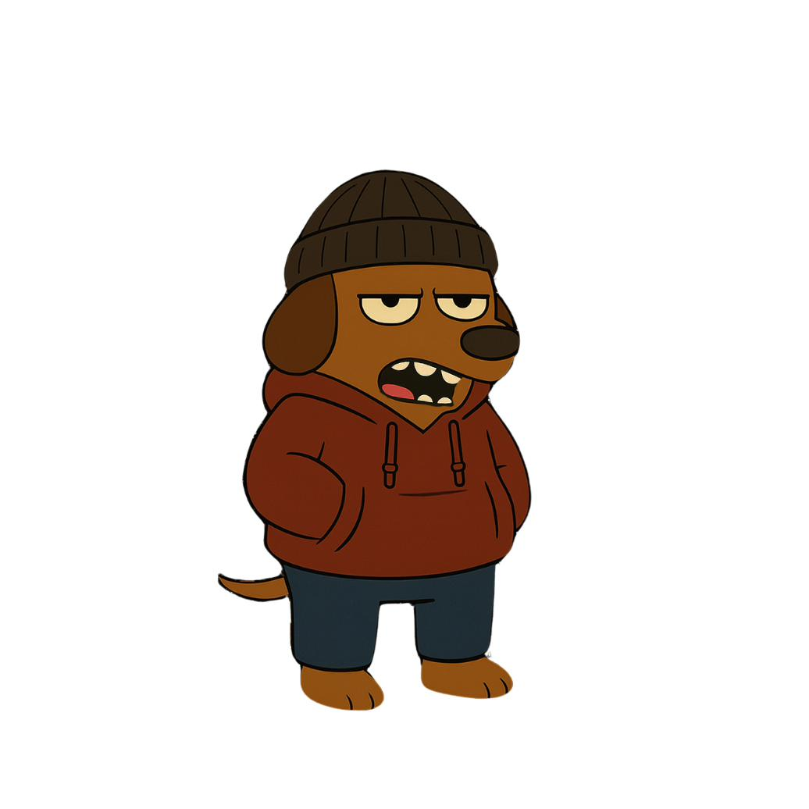
ごんべぇ（最初の基本の絵）gonbe_base.png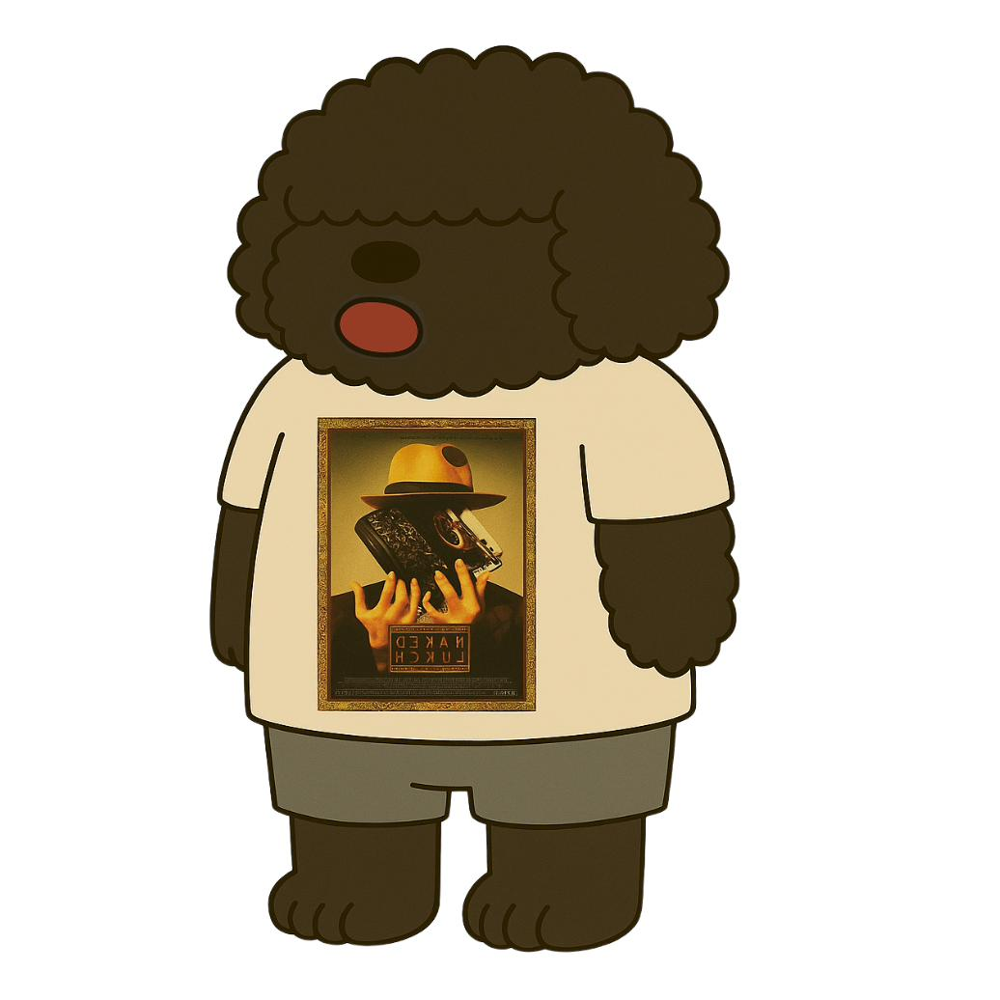
じょんどぅー（最初の基本の絵）johndoe_base.png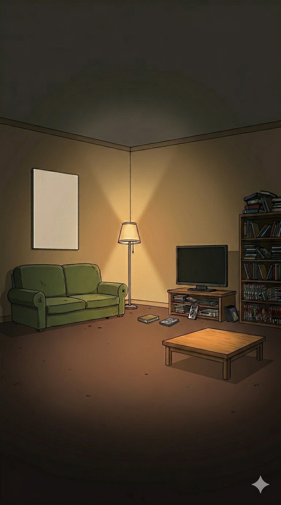
部屋（最初の絵）johndoe_room_v1.png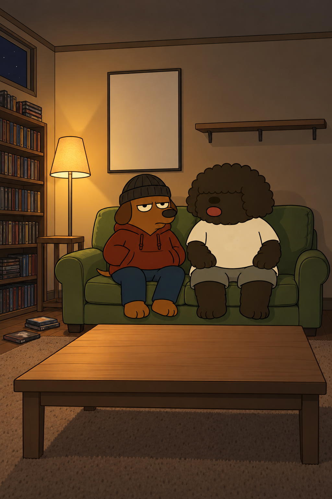
完成図（Tシャツ無地版）keyvisual.png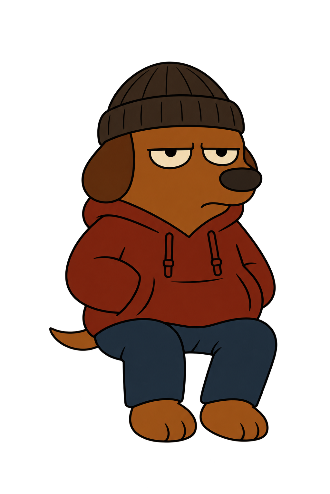
ごんべぇ（座り・透明背景）gonbe/sit_source.png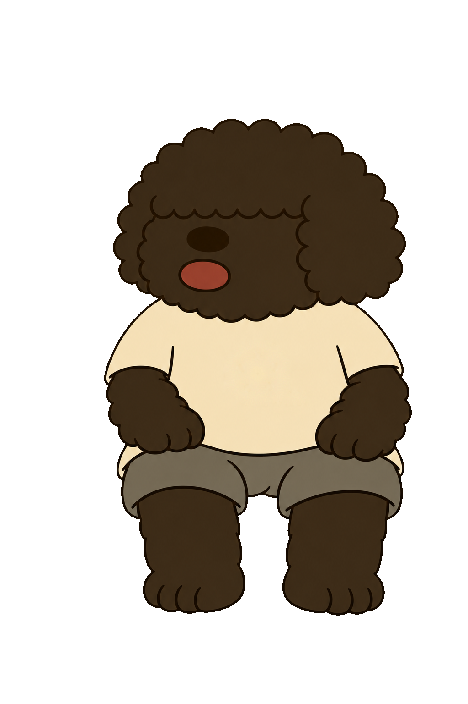
じょんどぅー（座り・無地Tシャツ・透明背景）johndoe/sit_source.png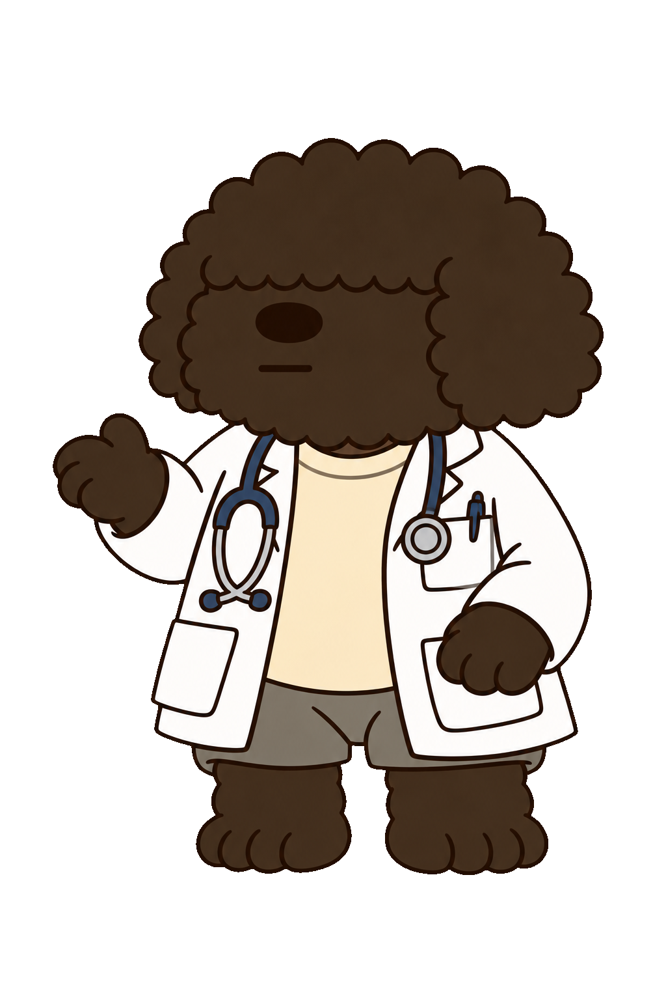
白衣のじょんどぅー（立ち絵）doctor_stand.png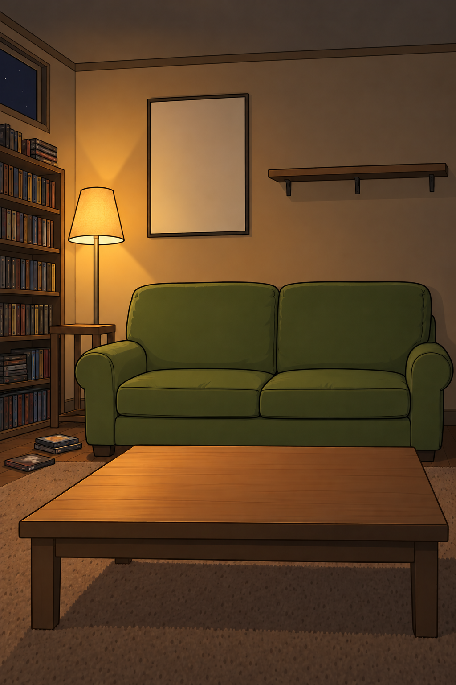
2人がいない部屋room_base_source.png| 素材 | 用途 | 作る人・入手先 |
|---|---|---|
| ごんべぇの立ち姿（入ってくる） | S3 入りのひと言 | オーナー：ChatGPT（PROMPTS_ChatGPT.md ⑦） |
| ごんべぇの照れ笑い・ため息 | 表情 | オーナー：ChatGPT（PROMPTS_ChatGPT.md ⑤） |
| 記号シート（汗・怒りマークなど9個） | 表情の記号（今はコードで描いた仮のもの） | オーナー：ChatGPT（PROMPTS_ChatGPT.md ⑧）。1回で9個 |
| 小物シート（部屋に置く物9個） | 回ごとの模様替え | オーナー：ChatGPT（PROMPTS_ChatGPT.md ⑨）。中身は回ごとに書き換え |
| 声 | 全セリフ | 未定：自分で録音／AIの読み上げ |
| ブランド音4つ（通知音・錠剤「カラン」・低音「ジャン」・はんこ「ドン」） | 毎回同じ音 | オーナー：商用利用OKの効果音サイトからダウンロード |
| BGM（暗めのLo-fi、毎回同じ） | 全編 | オーナー：商用利用OKの音楽サイトからダウンロード |
| 効果音（ポン・タイプ音・ドア・ため息など） | 演出 | オーナー：同上 |
| 配信サービスのアイコン | 映画紹介 | オーナー：各サービスの公式プレスキット |
| ポスター（その回の映画） | 映画紹介・部屋の壁 | 方針が未定（オリジナル絵／公式） |
tools/card-maker/renderer/assemble.pyassets/sound/placeholder/。本番の音を assets/sound/brand/stamp.wav のように同じ名前で置くと、そちらが優先される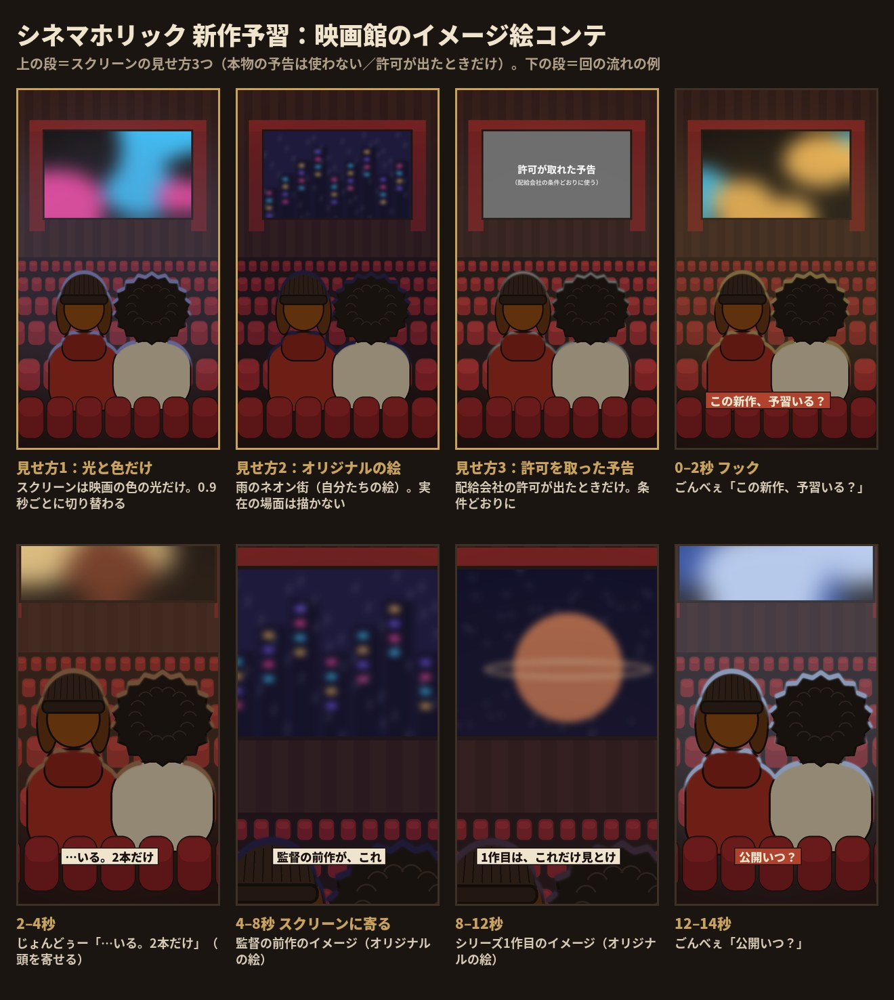
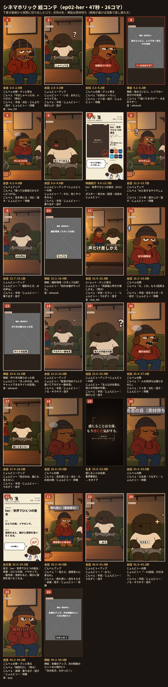
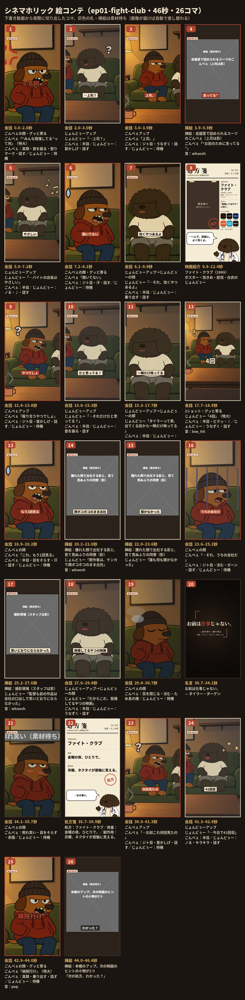
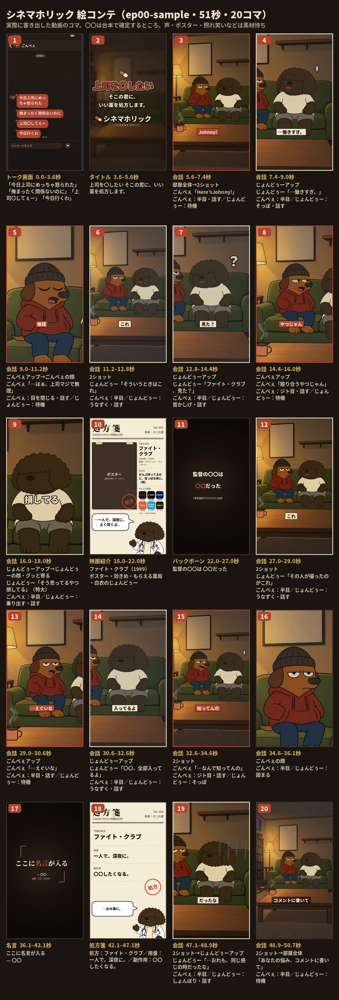
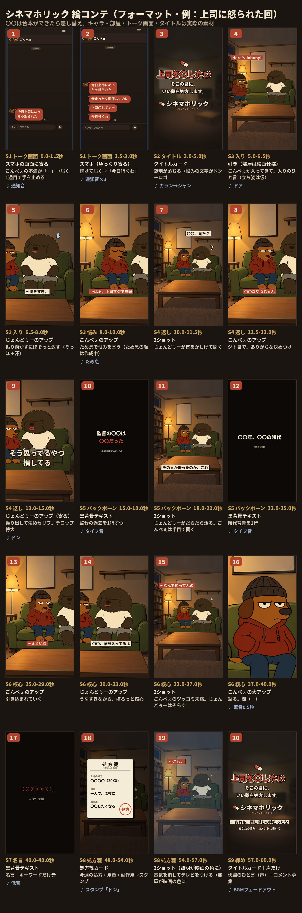
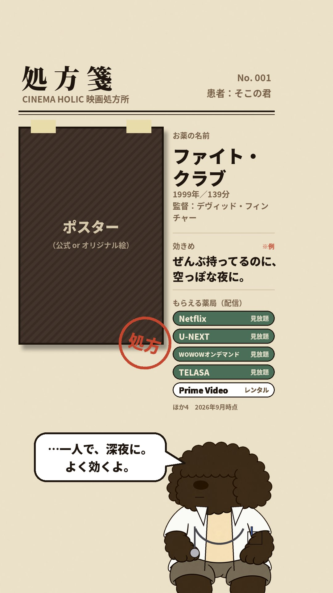
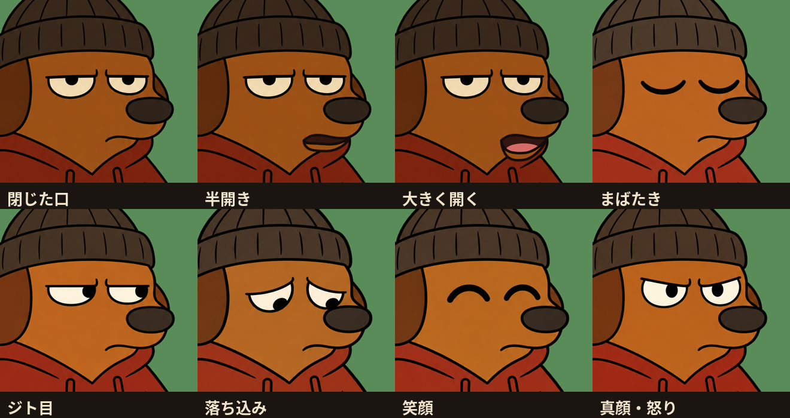